6 Глубокое обучение
В прошлой главе мы узнали, что глубокие нейронные сети часто гораздо труднее обучать, чем неглубокие. Это досадно, ведь у нас есть веские основания полагать, что, если бы мы умели обучать глубокие сети, они были бы гораздо мощнее неглубоких. Но хотя новости из прошлой главы и обескураживают, нас это не остановит. В этой главе мы разработаем приёмы, позволяющие обучать глубокие сети, и применим их на практике. Мы также посмотрим на картину шире, кратко рассмотрев недавние успехи глубоких сетей в распознавании изображений, речи и других приложениях. И бросим короткий, во многом умозрительный взгляд на то, что может ждать в будущем нейронные сети и искусственный интеллект.
Глава длинная. Чтобы вам было проще ориентироваться, проведу небольшую экскурсию. Разделы связаны между собой слабо, так что, если у вас есть базовое знакомство с нейронными сетями, можете сразу переходить к тому, что вам интереснее всего.
Основная часть главы — введение в один из самых широко используемых типов глубоких сетей: глубокие свёрточные сети. Мы подробно разберём пример — вместе с кодом — использования свёрточных сетей для решения задачи классификации рукописных цифр из набора данных MNIST:

Рассказ о свёрточных сетях мы начнём с неглубоких сетей, которыми решали эту задачу ранее в книге. За много итераций мы построим всё более мощные сети. По ходу дела мы изучим множество мощных приёмов: свёртки, пулинг, использование графических процессоров (GPU), чтобы обучать сети гораздо дольше, чем мы обучали неглубокие сети, алгоритмическое расширение обучающих данных (чтобы уменьшить переобучение), использование дропаута (тоже против переобучения), использование ансамблей сетей и другие. В результате получится система, работающая почти на уровне человека. Из 10 000 тестовых изображений MNIST — изображений, которых система не видела при обучении! — она правильно классифицирует 9967. Вот 33 изображения, классифицированные неправильно. Правильный ответ указан справа вверху, а ответ нашей программы — справа внизу:
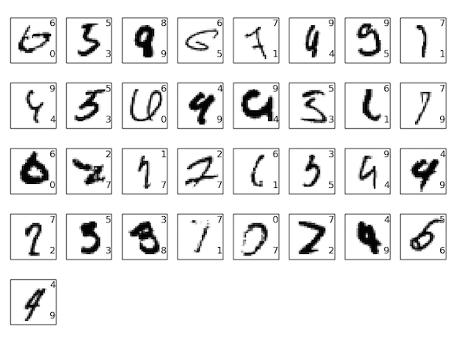
Многие из них трудно классифицировать даже человеку. Возьмём, например, третье изображение в верхнем ряду. По-моему, оно больше похоже на «9», чем на «8», как оно официально размечено. Наша сеть тоже считает, что это «9». Такая «ошибка» по меньшей мере понятна, а может, даже и похвальна. Обсуждение распознавания изображений мы завершим обзором впечатляющих недавних успехов сетей (в особенности свёрточных) в этой области.
Оставшаяся часть главы обсуждает глубокое обучение в более широком и менее детальном ключе. Мы кратко рассмотрим другие модели нейронных сетей — например, рекуррентные нейронные сети и блоки долгой краткосрочной памяти (LSTM) — и то, как такие модели применяются в распознавании речи, обработке естественного языка и других областях. И порассуждаем о будущем нейронных сетей и глубокого обучения — от идей вроде интерфейсов, управляемых намерениями пользователя, до роли глубокого обучения в искусственном интеллекте.
Глава опирается на предыдущие главы книги, используя и объединяя такие идеи, как обратное распространение, регуляризация, функция softmax и так далее. Однако, чтобы читать эту главу, не обязательно подробно прорабатывать все предыдущие. Впрочем, полезно прочитать главу 1 об основах нейронных сетей. Когда я использую понятия из глав 2–5, я даю ссылки, чтобы при необходимости вы могли с ними ознакомиться.
Стоит сказать и о том, чем эта глава не является. Это не учебник по новейшим и самым модным библиотекам нейронных сетей. И мы не будем обучать глубокие сети с десятками слоёв для решения задач на самом переднем крае. Скорее, в центре внимания — понимание некоторых ключевых принципов глубоких нейронных сетей и их применение в простом и понятном контексте задачи MNIST. Иначе говоря: эта глава не доведёт вас до самого переднего края. Цель этой и предыдущих глав — сосредоточиться на основах и тем самым подготовить вас к пониманию широкого круга современных работ.
6.1 Знакомство со свёрточными сетями
В предыдущих главах мы научили наши нейронные сети весьма неплохо распознавать изображения рукописных цифр:
Для этого мы использовали сети, в которых соседние слои полностью связаны друг с другом. То есть каждый нейрон сети связан с каждым нейроном соседних слоёв:
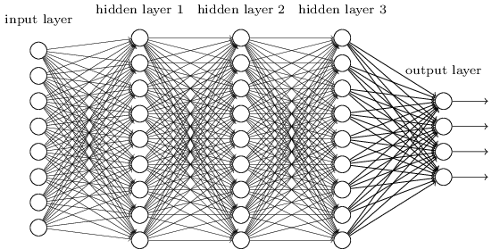
А именно, интенсивность каждого пикселя входного изображения мы кодировали значением соответствующего нейрона входного слоя. Для используемых нами изображений \(28\times28\) пикселей это значит, что у сети 784 (\(=28\times28\)) входных нейрона. Затем мы обучали веса и смещения сети так, чтобы выход сети — как мы надеемся! — правильно определял входное изображение: «0», «1», «2», …, «8» или «9».
Наши прежние сети работают весьма неплохо: на обучающих и тестовых данных из набора рукописных цифр MNIST мы получили точность классификации выше 98 процентов. Но если подумать, странно использовать для классификации изображений сети с полносвязными слоями. Дело в том, что такая архитектура никак не учитывает пространственную структуру изображений. Например, она относится к далёким и близким друг к другу входным пикселям совершенно одинаково. Подобные представления о пространственной структуре сеть вынуждена выводить из обучающих данных. А что если вместо архитектуры, начинающей с «чистого листа», использовать архитектуру, которая пытается воспользоваться пространственной структурой? В этом разделе я опишу свёрточные нейронные сети1. В них используется особая архитектура, особенно хорошо приспособленная для классификации изображений. Благодаря этой архитектуре свёрточные сети быстро обучаются. Это, в свою очередь, помогает обучать глубокие многослойные сети, которые очень хорошо классифицируют изображения. Сегодня глубокие свёрточные сети или их близкие варианты используются в большинстве нейронных сетей для распознавания изображений.
В свёрточных нейронных сетях используются три основные идеи: локальные рецептивные поля, общие веса и пулинг. Рассмотрим их по очереди.
Локальные рецептивные поля. В показанных ранее полносвязных слоях входы изображались вертикальным столбцом нейронов. В свёрточной сети удобнее представлять входы квадратом \(28\times28\) нейронов, значения которых соответствуют интенсивностям \(28\times28\) пикселей, подаваемых на вход:
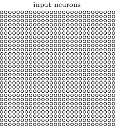
Как обычно, мы соединим входные пиксели со слоем скрытых нейронов. Но не будем соединять каждый входной пиксель с каждым скрытым нейроном. Вместо этого связи создаются только в небольших локальных областях входного изображения.
Точнее, каждый нейрон первого скрытого слоя будет связан с небольшой областью входных нейронов, например, с областью \(5\times5\), соответствующей 25 входным пикселям. Так что для конкретного скрытого нейрона связи могут выглядеть так:
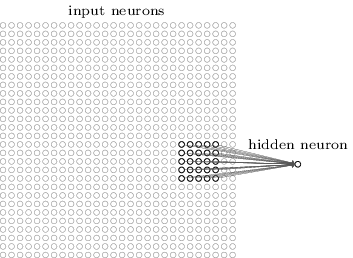
Эта область входного изображения называется локальным рецептивным полем скрытого нейрона. Это маленькое окошко на входных пикселях. Каждая связь выучивает свой вес. А скрытый нейрон выучивает ещё и общее смещение. Можно считать, что этот конкретный скрытый нейрон учится анализировать своё конкретное локальное рецептивное поле.
Затем мы сдвигаем локальное рецептивное поле по всему входному изображению. Каждому положению локального рецептивного поля соответствует свой скрытый нейрон первого скрытого слоя. Чтобы показать это конкретно, начнём с локального рецептивного поля в левом верхнем углу:
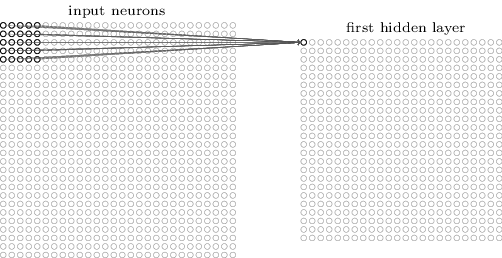
Затем сдвигаем локальное рецептивное поле на один пиксель вправо (то есть на один нейрон), чтобы подключить его ко второму скрытому нейрону:
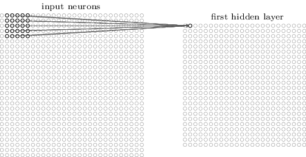
И так далее, выстраивая первый скрытый слой. Заметьте, что при входном изображении \(28\times28\) и локальных рецептивных полях \(5\times5\) в скрытом слое будет \(24\times24\) нейрона. Дело в том, что локальное рецептивное поле можно сдвинуть лишь на 23 нейрона вправо (или вниз), прежде чем оно упрётся в правый (или нижний) край входного изображения.
Я показал, что локальное рецептивное поле сдвигается каждый раз на один пиксель. На самом деле иногда используют и другой шаг. Например, можно сдвигать локальное рецептивное поле на 2 пикселя вправо (или вниз); тогда говорят, что используется шаг 2. В этой главе мы в основном будем использовать шаг 1, но стоит знать, что иногда экспериментируют и с другим шагом2.
Общие веса и смещения. Я сказал, что у каждого скрытого нейрона есть смещение и \(5\times5\) весов, связанных с его локальным рецептивным полем. Но ещё не упомянул, что для всех \(24\times24\) скрытых нейронов мы будем использовать одни и те же веса и смещение. Иными словами, выход \(j,k\)-го скрытого нейрона равен: \[\sigma\left(b + \sum_{l=0}^4 \sum_{m=0}^4 w_{l,m} a_{j+l, k+m} \right).\tag{125}\label{eq:125}\] Здесь \(\sigma\) — функция активации нейрона, например сигмоида, которой мы пользовались в предыдущих главах. \(b\) — общее значение смещения. \(w_{l,m}\) — массив \(5\times5\) общих весов. И наконец, через \(a_{x,y}\) обозначена входная активация в позиции \(x,y\).
Это значит, что все нейроны первого скрытого слоя обнаруживают в точности один и тот же признак3, только в разных местах входного изображения. Чтобы понять, почему это разумно, предположим, что веса и смещение таковы, что скрытый нейрон умеет выделять, скажем, вертикальную границу в конкретном локальном рецептивном поле. Скорее всего, эта способность пригодится и в других местах изображения. Поэтому полезно применять один и тот же детектор признака по всему изображению. Говоря чуть более абстрактно, свёрточные сети хорошо приспособлены к инвариантности изображений относительно сдвига: если немного сдвинуть, скажем, изображение кошки, это всё равно будет изображение кошки4.
Поэтому отображение входного слоя в скрытый иногда называют картой признаков. Веса, задающие карту признаков, мы называем общими весами. А смещение, задающее таким образом карту признаков, — общим смещением. Часто говорят, что общие веса и смещение задают ядро, или фильтр. В литературе эти термины иногда используются немного по-разному, поэтому я не буду уточнять; лучше скоро мы рассмотрим конкретные примеры.
Описанная до сих пор структура сети может обнаруживать лишь один вид локального признака. Для распознавания изображений нужно больше одной карты признаков. Поэтому полный свёрточный слой состоит из нескольких разных карт признаков:
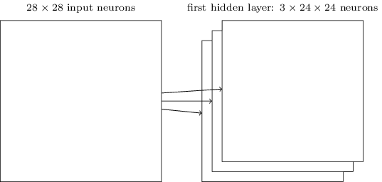
В показанном примере 3 карты признаков. Каждая карта задаётся набором из \(5\times5\) общих весов и одним общим смещением. В результате сеть может обнаруживать 3 разных вида признаков, причём каждый признак может обнаруживаться по всему изображению. Я показал всего 3 карты признаков, чтобы не усложнять схему. Но на практике свёрточные сети могут использовать больше (а иногда и гораздо больше) карт признаков. Одна из первых свёрточных сетей, LeNet-5, для распознавания цифр MNIST использовала 6 карт признаков, каждая со своим локальным рецептивным полем \(5\times5\). Так что показанный выше пример на самом деле довольно близок к LeNet-5. В примерах, которые мы разработаем дальше в главе, будут свёрточные слои с 20 и 40 картами признаков. Мельком взглянем на некоторые выученные признаки:
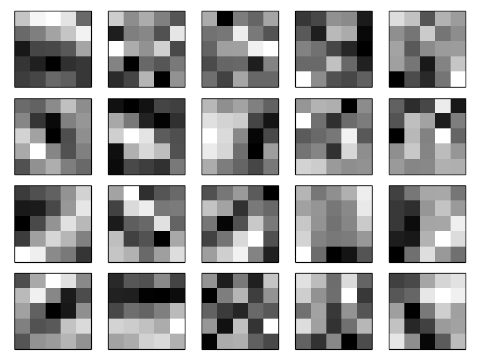
20 изображений соответствуют 20 разным картам признаков (или фильтрам, или ядрам). Каждая карта представлена блочным изображением \(5\times5\), соответствующим \(5\times5\) весам локального рецептивного поля. Более белые блоки означают меньший (как правило, более отрицательный) вес, так что карта признаков слабее реагирует на соответствующие входные пиксели. Более тёмные блоки означают больший вес, так что карта признаков сильнее реагирует на соответствующие входные пиксели. Очень грубо говоря, изображения выше показывают, на какие признаки реагирует свёрточный слой.
Какие выводы можно сделать по этим картам признаков? Ясно, что здесь есть пространственная структура сверх той, что можно было бы ожидать случайно: у многих признаков чётко видны светлые и тёмные подобласти. Это показывает, что сеть действительно выучивает нечто, связанное с пространственной структурой. Однако помимо этого трудно понять, что именно выучивают эти детекторы признаков. Уж точно это не, скажем, фильтры Габора, которые использовались во многих традиционных подходах к распознаванию изображений. Сейчас ведётся много работы по лучшему пониманию признаков, выучиваемых свёрточными сетями. Если хотите следить за этой работой, советую начать со статьи Visualizing and Understanding Convolutional Networks Мэттью Зейлера и Роба Фергуса (2013).
Большое преимущество общих весов и смещений в том, что они сильно сокращают число параметров свёрточной сети. Для каждой карты признаков нужно \(25=5\times5\) общих весов плюс одно общее смещение. Так что каждая карта признаков требует 26 параметров. При 20 картах признаков свёрточный слой задаётся в общей сложности \(20\times26=520\) параметрами. Для сравнения предположим, что первый слой полносвязный, с \(784=28\times28\) входными нейронами и сравнительно скромными 30 скрытыми нейронами, как во многих примерах ранее в книге. Это \(784\times30\) весов плюс ещё 30 смещений — всего 23 550 параметров. Иными словами, у полносвязного слоя было бы более чем в 40 раз больше параметров, чем у свёрточного.
Конечно, напрямую сравнивать число параметров нельзя, поскольку модели существенно различаются. Но интуитивно кажется вероятным, что использование инвариантности относительно сдвига позволит свёрточному слою обойтись меньшим числом параметров для достижения того же качества, что и полносвязная модель. Это, в свою очередь, ускорит обучение свёрточной модели и в конечном счёте поможет строить глубокие сети со свёрточными слоями.
Кстати, название «свёрточная» связано с тем, что операцию в уравнении (125) иногда называют свёрткой. Чуть точнее, это уравнение иногда записывают как \(a^1=\sigma(b+w\ast a^0)\), где \(a^1\) — набор выходных активаций одной карты признаков, \(a^0\) — набор входных активаций, а \(\ast\) называется операцией свёртки. Глубоко использовать математику свёрток мы не будем, так что особенно беспокоиться об этой связи не нужно. Но знать, откуда взялось название, всё же стоит.
Слои пулинга. Помимо только что описанных свёрточных слоёв, свёрточные нейронные сети содержат слои пулинга (субдискретизации). Обычно слои пулинга идут сразу после свёрточных слоёв. Слои пулинга упрощают информацию на выходе свёрточного слоя.
Подробнее: слой пулинга берёт каждую карту признаков5, выдаваемую свёрточным слоем, и готовит сжатую карту признаков. Например, каждый элемент слоя пулинга может обобщать область из (скажем) \(2\times2\) нейронов предыдущего слоя. Конкретный пример — распространённая процедура пулинга, известная как max-пулинг. При max-пулинге элемент пулинга просто выдаёт максимальную активацию во входной области \(2\times2\), как показано на схеме:
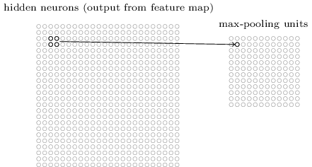
Заметьте: поскольку на выходе свёрточного слоя \(24\times24\) нейрона, после пулинга получается \(12\times12\) нейронов.
Как говорилось выше, свёрточный слой обычно содержит больше одной карты признаков. Max-пулинг применяется к каждой карте признаков отдельно. Так что при трёх картах признаков объединённые свёрточный слой и слой max-пулинга выглядели бы так:
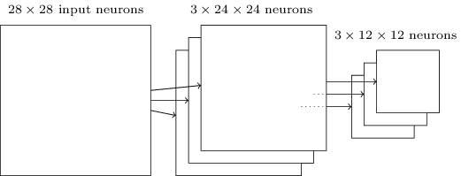
Max-пулинг можно считать способом, которым сеть спрашивает, есть ли данный признак где-нибудь в некоторой области изображения. После этого точная информация о положении отбрасывается. Интуиция такова: раз признак найден, его точное местоположение не так важно, как его примерное расположение относительно других признаков. Большое преимущество в том, что признаков после пулинга гораздо меньше, а это помогает сократить число параметров, нужных в последующих слоях.
Max-пулинг — не единственный способ пулинга. Другой распространённый подход называется L2-пулингом. Здесь вместо максимальной активации в области \(2\times2\) нейронов берётся квадратный корень из суммы квадратов активаций в области \(2\times2\). Детали различаются, но интуиция похожа на max-пулинг: L2-пулинг — способ сжать информацию со свёрточного слоя. На практике широко используются оба приёма. А иногда используют и другие виды операции пулинга. Если вы действительно пытаетесь оптимизировать качество, можно с помощью проверочных данных сравнить несколько разных подходов к пулингу и выбрать тот, что работает лучше. Но мы не будем беспокоиться о подобной детальной оптимизации.
Собираем всё вместе. Теперь все эти идеи можно объединить в полную свёрточную нейронную сеть. Она похожа на только что рассмотренную архитектуру, но в ней добавлен слой из 10 выходных нейронов, соответствующих 10 возможным значениям цифр MNIST («0», «1», «2» и т. д.):
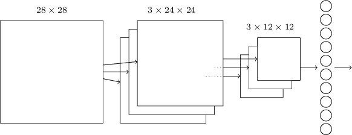
Сеть начинается с \(28\times28\) входных нейронов, кодирующих интенсивности пикселей изображения MNIST. Далее следует свёрточный слой с локальным рецептивным полем \(5\times5\) и 3 картами признаков. В результате получается слой из \(3\times24\times24\) скрытых нейронов-признаков. Следующий шаг — слой max-пулинга, применяемый к областям \(2\times2\) в каждой из 3 карт признаков. В результате получается слой из \(3\times12\times12\) скрытых нейронов-признаков.
Последний слой связей в сети — полносвязный. То есть этот слой связывает каждый нейрон слоя max-пулинга с каждым из 10 выходных нейронов. Эта полносвязная архитектура такая же, как в предыдущих главах. Заметьте, однако, что на схеме выше я для простоты нарисовал одну стрелку, а не все связи. Конечно, связи легко себе представить.
Эта свёрточная архитектура сильно отличается от архитектур предыдущих глав. Но общая картина похожа: сеть из множества простых элементов, поведение которых определяется их весами и смещениями. И общая цель та же: с помощью обучающих данных обучить веса и смещения сети так, чтобы она хорошо классифицировала входные цифры.
В частности, как и ранее в книге, мы будем обучать сеть стохастическим градиентным спуском и обратным распространением. В основном всё происходит точно так же, как в предыдущих главах. Однако процедуру обратного распространения придётся немного изменить. Дело в том, что наш прежний вывод обратного распространения был для сетей с полносвязными слоями. К счастью, изменить вывод для свёрточных слоёв и слоёв max-пулинга несложно. Если хотите разобраться в деталях, приглашаю вас решить следующую задачу. Предупреждаю: решение займёт некоторое время, если только вы по-настоящему не усвоили прежний вывод обратного распространения (тогда это легко).
6.1.1 Задача
Обратное распространение в свёрточной сети. Основные уравнения обратного распространения в сети с полносвязными слоями — (BP1)–(BP4). Пусть у нас есть сеть со свёрточным слоем, слоем max-пулинга и полносвязным выходным слоем, как в рассмотренной выше сети. Как изменятся уравнения обратного распространения?
6.2 Свёрточные нейронные сети на практике
Мы познакомились с ключевыми идеями свёрточных нейронных сетей.
Посмотрим, как они работают на практике: реализуем несколько свёрточных
сетей и применим их к задаче классификации цифр MNIST. Для этого будем
использовать программу network3.py — улучшенную версию
программ network.py и network2.py из
предыдущих глав6. Если хотите повторять за мной, код
доступен
на GitHub. Сам код network3.py мы разберём в следующем
разделе. А в этом разделе будем использовать network3.py
как библиотеку для построения свёрточных сетей.
Программы network.py и network2.py были
написаны на Python с использованием матричной библиотеки Numpy. Они
строились с самых основ и вникали во все детали обратного
распространения, стохастического градиентного спуска и так далее. Но
теперь, когда мы эти детали понимаем, для network3.py мы
воспользуемся библиотекой машинного обучения Theano7.
Theano позволяет легко реализовать обратное распространение для
свёрточных нейронных сетей, поскольку автоматически вычисляет все нужные
отображения. Кроме того, Theano заметно быстрее нашего прежнего кода
(написанного так, чтобы его было легко понять, а не чтобы он был
быстрым), что делает практичным обучение более сложных сетей. В
частности, одна из замечательных возможностей Theano — она может
выполнять код как на CPU, так и, если есть, на GPU. Выполнение на GPU
даёт существенное ускорение и, опять же, делает практичным обучение
более сложных сетей.
Если хотите повторять за мной, нужно установить Theano на свою
систему. Для этого следуйте инструкциям на домашней странице проекта.
Приведённые ниже примеры выполнялись на Theano 0.68.
Некоторые — на Mac OS X Yosemite без GPU. Некоторые — на Ubuntu 14.04 с
GPU NVIDIA. А некоторые эксперименты — и там, и там. Чтобы запустить
network3.py, нужно задать в исходном коде
network3.py флаг GPU равным True или False (как подходит).
Помимо этого, для запуска Theano на GPU могут пригодиться инструкции,
которые можно найти здесь. В сети есть и руководства, которые легко
найти через Google и которые помогут всё настроить. Если локального GPU
нет, можно присмотреться к спотовым инстансам Amazon Web Services EC2
G2. Учтите, что даже с GPU код будет выполняться некоторое время. Многие
эксперименты занимают от минут до часов. На CPU самые сложные
эксперименты могут занять дни. Как и в предыдущих главах, советую
запустить эксперимент, продолжать читать и время от времени
возвращаться, чтобы проверить вывод программы. Если вы используете CPU,
возможно, стоит уменьшить число эпох обучения в самых сложных
экспериментах или вообще их пропустить.
Для отправной точки начнём с неглубокой архитектуры всего с одним скрытым слоем из 100 скрытых нейронов. Будем обучать 60 эпох со скоростью обучения \(\eta=0.1\), размером мини-пакета 10 и без регуляризации. Поехали9:
>>> import network3
>>> from network3 import Network
>>> from network3 import ConvPoolLayer, FullyConnectedLayer, SoftmaxLayer
>>> training_data, validation_data, test_data = network3.load_data_shared()
>>> mini_batch_size = 10
>>> net = Network([FullyConnectedLayer(n_in=784, n_out=100),SoftmaxLayer(n_in=100, n_out=10)], mini_batch_size)
>>> net.SGD(training_data, 60, mini_batch_size, 0.1, validation_data, test_data)Я получил лучшую точность классификации 97.80 процента. Это точность
классификации на test_data, измеренная в ту эпоху обучения,
когда достигается лучшая точность классификации на
validation_data. Использование проверочных данных для
выбора момента оценки точности на тестовых данных помогает избежать
переобучения под тестовые данные (см. прежнее обсуждение использования
проверочных данных). Мы будем придерживаться этой практики и дальше.
Ваши результаты могут немного отличаться, поскольку веса и смещения сети
инициализируются случайно10.
Точность 97.80 процента близка к 98.04 процента, полученным ещё в главе 3 с похожей архитектурой сети и похожими гиперпараметрами обучения. В частности, в обоих примерах использовалась неглубокая сеть с одним скрытым слоем из 100 скрытых нейронов. В обоих обучение шло 60 эпох с размером мини-пакета 10 и скоростью обучения \(\eta=0.1\).
Однако у той, прежней сети было два отличия. Во-первых, мы её регуляризовали, чтобы ослабить последствия переобучения. Регуляризация текущей сети действительно повышает точность, но выигрыш небольшой, так что о регуляризации мы побеспокоимся позже. Во-вторых, если в последнем слое прежней сети использовались сигмоидные активации и функция стоимости на основе перекрёстной энтропии, то в текущей сети последний слой — softmax, а функция стоимости — логарифмическое правдоподобие. Как объяснялось в главе 3, это не большое изменение. Я сделал это переключение не по какой-то особо глубокой причине — в основном потому, что softmax со стоимостью логарифмического правдоподобия чаще встречается в современных сетях для классификации изображений.
Можно ли улучшить эти результаты с помощью более глубокой архитектуры сети?
Начнём с того, что вставим свёрточный слой в самое начало сети. Будем использовать локальные рецептивные поля 5 на 5, шаг 1 и 20 карт признаков. Вставим также слой max-пулинга, объединяющий признаки окнами пулинга 2 на 2. Так что общая архитектура сети очень похожа на рассмотренную в предыдущем разделе, но с дополнительным полносвязным слоем:
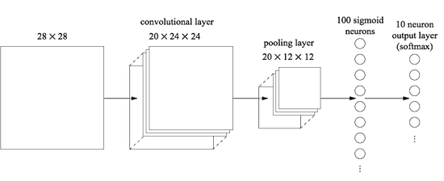
В этой архитектуре можно считать, что свёрточный слой и слой пулинга изучают локальную пространственную структуру входного обучающего изображения, а последующий полносвязный слой учится на более абстрактном уровне, объединяя глобальную информацию со всего изображения. Это распространённая схема в свёрточных нейронных сетях.
Обучим такую сеть и посмотрим, как она работает11:
>>> net = Network([
ConvPoolLayer(
image_shape=(mini_batch_size, 1, 28, 28),
filter_shape=(20, 1, 5, 5),
poolsize=(2, 2)),
FullyConnectedLayer(n_in=20*12*12, n_out=100),
SoftmaxLayer(n_in=100, n_out=10)], mini_batch_size)
>>> net.SGD(training_data, 60, mini_batch_size, 0.1, validation_data, test_data)Это даёт точность 98.78 процента — заметное улучшение по сравнению со всеми нашими прежними результатами. Мы уменьшили долю ошибок более чем на треть — это большое улучшение.
Задавая структуру сети, я рассматривал свёрточный слой и слой пулинга
как один слой. Считать ли их отдельными слоями или одним — отчасти дело
вкуса. network3.py рассматривает их как один слой,
поскольку так код network3.py получается немного
компактнее. Однако при желании network3.py легко изменить
так, чтобы эти слои задавались по отдельности.
6.2.1 Упражнение
Какую точность классификации вы получите, если уберёте полносвязный слой и будете использовать только свёрточный слой с пулингом и слой softmax? Помогает ли добавление полносвязного слоя?
Можно ли улучшить точность классификации 98.78 процента?
Попробуем вставить второй слой свёртки с пулингом. Вставим его между существующим слоем свёртки с пулингом и полносвязным скрытым слоем. Снова используем локальное рецептивное поле \(5\times5\) и пулинг по областям \(2\times2\). Посмотрим, что получится при обучении с гиперпараметрами, похожими на прежние:
>>> net = Network([
ConvPoolLayer(
image_shape=(mini_batch_size, 1, 28, 28),
filter_shape=(20, 1, 5, 5),
poolsize=(2, 2)),
ConvPoolLayer(
image_shape=(mini_batch_size, 20, 12, 12),
filter_shape=(40, 20, 5, 5),
poolsize=(2, 2)),
FullyConnectedLayer(n_in=40*4*4, n_out=100),
SoftmaxLayer(n_in=100, n_out=10)], mini_batch_size)
>>> net.SGD(training_data, 60, mini_batch_size, 0.1, validation_data, test_data)И снова улучшение: теперь точность классификации 99.06 процента!
Здесь естественно возникают два вопроса. Первый: что вообще означает применение второго слоя свёртки с пулингом? На самом деле можно считать, что на вход второго слоя свёртки с пулингом подаются «изображения» \(12\times12\), «пиксели» которых отражают наличие (или отсутствие) определённых локальных признаков на исходном входном изображении. Так что можно считать, что на вход этого слоя подаётся версия исходного входного изображения. Эта версия абстрагирована и сжата, но всё ещё обладает богатой пространственной структурой, поэтому второй слой свёртки с пулингом имеет смысл.
Это удовлетворительная точка зрения, но она порождает второй вопрос. Выход предыдущего слоя состоит из 20 отдельных карт признаков, так что на вход второго слоя свёртки с пулингом подаётся \(20\times12\times12\) значений. Получается, будто на вход слоя свёртки с пулингом подаются 20 отдельных изображений, а не одно, как в первом слое свёртки с пулингом. Как нейроны второго слоя свёртки с пулингом должны реагировать на эти многочисленные входные изображения? На самом деле мы позволим каждому нейрону этого слоя учиться на всех \(20\times5\times5\) входных нейронах своего локального рецептивного поля. Менее формально: детекторы признаков во втором слое свёртки с пулингом имеют доступ ко всем признакам предыдущего слоя, но только в пределах своего локального рецептивного поля12.
6.2.2 Задача
Использование функции активации tanh. Ранее в книге я несколько раз упоминал доводы в пользу того, что tanh может быть лучшей функцией активации, чем сигмоида. Мы ни разу не последовали этим советам, поскольку и с сигмоидой продвигались вполне успешно. Но теперь давайте поэкспериментируем с tanh в качестве функции активации. Попробуйте обучить сеть с активациями tanh в свёрточных и полносвязных слоях13. Начните с тех же гиперпараметров, что и для сигмоидной сети, но обучайте 20 эпох вместо 60. Насколько хорошо работает ваша сеть? А если продолжить до 60 эпох? Постройте графики поэпохальной точности на проверочных данных для сетей на основе tanh и сигмоиды вплоть до 60 эпох. Если ваши результаты похожи на мои, вы обнаружите, что сети с tanh учатся чуть быстрее, но итоговая точность очень похожа. Можете ли вы объяснить, почему сеть с tanh может учиться быстрее? Можно ли добиться похожей скорости обучения с сигмоидой — например, изменив скорость обучения или выполнив какое-то масштабирование14? Проделайте с полдюжины итераций по гиперпараметрам обучения или архитектуре сети, ища способы, при которых tanh может оказаться лучше сигмоиды. Примечание: это открытая задача. Лично я не нашёл особых преимуществ в переходе на tanh, хотя и не экспериментировал исчерпывающе; возможно, вам удастся найти способ. Так или иначе, сейчас мы обнаружим преимущество перехода на выпрямленную линейную функцию активации, поэтому глубже в использование tanh вдаваться не будем.
Использование выпрямленных линейных нейронов. Сеть, которую мы к этому моменту построили, на самом деле — вариант одной из сетей из основополагающей статьи 1998 года15, в которой была представлена задача MNIST, — сети, известной как LeNet-5. Это хорошая основа для дальнейших экспериментов и для развития понимания и интуиции. В частности, сеть можно менять многими способами, пытаясь улучшить результаты.
Для начала изменим нейроны: вместо сигмоидной функции активации будем использовать выпрямленные линейные нейроны (ReLU). То есть будем использовать функцию активации \(f(z)\equiv\max(0,z)\). Будем обучать 60 эпох со скоростью обучения \(\eta=0.03\). Я также обнаружил, что немного помогает небольшая L2-регуляризация с параметром регуляризации \(\lambda=0.1\):
>>> from network3 import ReLU
>>> net = Network([
ConvPoolLayer(
image_shape=(mini_batch_size, 1, 28, 28),
filter_shape=(20, 1, 5, 5), poolsize=(2, 2), activation_fn=ReLU),
ConvPoolLayer(
image_shape=(mini_batch_size, 20, 12, 12), filter_shape=(40, 20, 5, 5),
poolsize=(2, 2), activation_fn=ReLU),FullyConnectedLayer(n_in=40*4*4, n_out=100, activation_fn=ReLU),
SoftmaxLayer(n_in=100, n_out=10)], mini_batch_size)
>>> net.SGD(training_data, 60, mini_batch_size, 0.03, validation_data, test_data, lmbda=0.1)
Я получил точность классификации 99.23 процента. Это скромное улучшение по сравнению с результатами для сигмоиды (99.06). Однако во всех моих экспериментах сети на основе выпрямленных линейных нейронов неизменно превосходили сети с сигмоидными функциями активации. Похоже, переход на выпрямленные линейные нейроны в этой задаче даёт реальный выигрыш.
Чем выпрямленная линейная функция активации лучше сигмоиды или tanh? Сейчас ответ на этот вопрос мы понимаем плохо. Более того, выпрямленные линейные нейроны стали широко использоваться лишь в последние несколько лет. Причина такого недавнего распространения эмпирическая: несколько человек попробовали выпрямленные линейные нейроны, часто опираясь на догадки или эвристические доводы16. Они получили хорошие результаты на эталонных наборах данных, и практика распространилась. В идеальном мире у нас была бы теория, говорящая, какую функцию активации выбирать для какого приложения. Но сейчас мы от такого мира очень далеки. Я бы ничуть не удивился, если бы ещё более удачный выбор функции активации позволил добиться дальнейших крупных улучшений. И ожидаю, что в ближайшие десятилетия будет создана мощная теория функций активации. А сегодня нам всё ещё приходится полагаться на плохо понятые практические правила и опыт.
Расширение обучающих данных. Ещё один способ, которым можно надеяться
улучшить результаты, — алгоритмически расширить обучающие данные.
Простой способ расширения — сдвинуть каждое обучающее изображение на
один пиксель: вверх, вниз, влево или вправо. Это можно сделать, запустив
из командной строки программу expand_mnist.py17:
$ python expand_mnist.pyЭта программа берёт 50 000 обучающих изображений MNIST и готовит расширенный обучающий набор из 250 000 обучающих изображений. Затем на этих изображениях можно обучать сеть. Будем использовать ту же сеть, что и выше, с выпрямленными линейными нейронами. В первых экспериментах я уменьшал число эпох обучения — это казалось разумным, ведь данных в 5 раз больше. Но оказалось, что расширение данных заметно ослабило переобучение. Поэтому, немного поэкспериментировав, я в итоге вернулся к обучению в течение 60 эпох. Так или иначе, обучим сеть:
>>> expanded_training_data, _, _ = network3.load_data_shared("../data/mnist_expanded.pkl.gz")
>>> net = Network([
ConvPoolLayer(
image_shape=(mini_batch_size, 1, 28, 28),
filter_shape=(20, 1, 5, 5),
poolsize=(2, 2),
activation_fn=ReLU),
ConvPoolLayer(
image_shape=(mini_batch_size, 20, 12, 12),
filter_shape=(40, 20, 5, 5),
poolsize=(2, 2),
activation_fn=ReLU),
FullyConnectedLayer(n_in=40*4*4, n_out=100, activation_fn=ReLU),
SoftmaxLayer(n_in=100, n_out=10)], mini_batch_size)
>>> net.SGD(expanded_training_data, 60, mini_batch_size, 0.03, validation_data, test_data, lmbda=0.1)С расширенными обучающими данными я получил точность 99.37 процента. Так что это почти тривиальное изменение даёт существенное улучшение точности классификации. Как мы обсуждали ранее, идею алгоритмического расширения данных можно развить и дальше. Просто чтобы напомнить, какого рода результаты были в том обсуждении: в 2003 году Симар, Стейнкраус и Платт18 подняли качество на MNIST до 99.6 процента с помощью нейронной сети, в остальном очень похожей на нашу: два слоя свёртки с пулингом, за которыми следует скрытый полносвязный слой из 100 нейронов. В деталях их архитектура немного отличалась — например, у них не было преимущества выпрямленных линейных нейронов, — но ключом к улучшению качества стало расширение обучающих данных. Они делали это поворотами, сдвигами и скосами обучающих изображений MNIST. Они также разработали процедуру «упругого искажения» — способ имитировать случайные колебания мышц руки при письме. Объединив все эти процедуры, они существенно увеличили эффективный размер обучающих данных — так и была достигнута точность 99.6 процента.
6.2.3 Задача
Идея свёрточных слоёв в том, чтобы вести себя инвариантно по всему изображению. Поэтому может показаться удивительным, что сеть может выучить больше, когда мы всего лишь сдвинули входные данные. Можете ли вы объяснить, почему на самом деле это вполне разумно?
Добавление ещё одного полносвязного слоя. Можно ли сделать ещё лучше? Один вариант — проделать ровно ту же процедуру, что и выше, но увеличить размер полносвязного слоя. Я пробовал 300 и 1000 нейронов и получил результаты 99.46 и 99.43 процента соответственно. Интересно, но это не очень убедительная победа над прежним результатом (99.37 процента).
А что если добавить ещё один полносвязный слой? Попробуем вставить дополнительный полносвязный слой, чтобы получилось два полносвязных слоя по 100 скрытых нейронов:
>>> net = Network([
ConvPoolLayer(image_shape=(mini_batch_size, 1, 28, 28),
filter_shape=(20, 1, 5, 5),
poolsize=(2, 2),
activation_fn=ReLU),
ConvPoolLayer(image_shape=(mini_batch_size, 20, 12, 12),
filter_shape=(40, 20, 5, 5),
poolsize=(2, 2),
activation_fn=ReLU),
FullyConnectedLayer(n_in=40*4*4, n_out=100, activation_fn=ReLU),
FullyConnectedLayer(n_in=100, n_out=100, activation_fn=ReLU),
SoftmaxLayer(n_in=100, n_out=10)], mini_batch_size)
>>> net.SGD(expanded_training_data, 60, mini_batch_size, 0.03, validation_data, test_data, lmbda=0.1)
Так я получил точность на тестовых данных 99.43 процента. И снова расширенная сеть помогает не особенно сильно. Похожие эксперименты с полносвязными слоями из 300 и 1000 нейронов дают результаты 99.48 и 99.47 процента. Это обнадёживает, но всё ещё не тянет на по-настоящему решительную победу.
Что здесь происходит? Может быть, увеличенные или дополнительные полносвязные слои действительно не помогают на MNIST? Или у сети есть возможность работать лучше, но мы неправильно подходим к обучению? Например, возможно, стоит использовать более сильные приёмы регуляризации, чтобы ослабить склонность к переобучению. Один из вариантов — дропаут, представленный ещё в главе 3. Напомню, что основная идея дропаута — случайным образом удалять отдельные активации в ходе обучения сети. Это делает модель более устойчивой к потере отдельных свидетельств и, значит, менее склонной полагаться на конкретные особенности обучающих данных. Попробуем применить дропаут к последним полносвязным слоям:
>>> net = Network([
ConvPoolLayer(image_shape=(mini_batch_size, 1, 28, 28),
filter_shape=(20, 1, 5, 5),
poolsize=(2, 2),
activation_fn=ReLU),
ConvPoolLayer(image_shape=(mini_batch_size, 20, 12, 12),
filter_shape=(40, 20, 5, 5),
poolsize=(2, 2),
activation_fn=ReLU),
FullyConnectedLayer(
n_in=40*4*4, n_out=1000, activation_fn=ReLU, p_dropout=0.5),
FullyConnectedLayer(
n_in=1000, n_out=1000, activation_fn=ReLU, p_dropout=0.5),
SoftmaxLayer(n_in=1000, n_out=10, p_dropout=0.5)],
mini_batch_size)
>>> net.SGD(expanded_training_data, 40, mini_batch_size, 0.03,
validation_data, test_data)
С этим мы получаем точность 99.60 процента — существенное улучшение по сравнению с прежними результатами, особенно с нашим главным эталоном, сетью со 100 скрытыми нейронами, давшей 99.37 процента.
Стоит отметить два изменения.
Во-первых, я уменьшил число эпох обучения до 40: дропаут ослабил переобучение, и обучение пошло быстрее.
Во-вторых, в полносвязных скрытых слоях 1000 нейронов, а не 100, как раньше. Конечно, при обучении дропаут фактически выбрасывает многие нейроны, так что некоторого увеличения следовало ожидать. На самом деле я экспериментировал и с 300, и с 1000 скрытыми нейронами и с 1000 получил (совсем чуть-чуть) лучшее качество на проверочных данных.
Использование ансамбля сетей. Простой способ ещё больше улучшить качество — создать несколько нейронных сетей, а затем заставить их проголосовать за лучший вариант классификации. Предположим, например, что мы обучили по приведённому рецепту 5 разных нейронных сетей и каждая достигла точности около 99.6 процента. Хотя у всех сетей точность похожа, ошибки они вполне могут делать разные из-за разных случайных начальных значений. Правдоподобно, что голосование среди наших 5 сетей может дать классификацию лучше, чем у любой отдельной сети.
Звучит слишком хорошо, чтобы быть правдой, но такое объединение в ансамбли — распространённый приём как в нейронных сетях, так и в других методах машинного обучения. И он действительно даёт дальнейшее улучшение: в итоге получаем точность 99.67 процента. Иными словами, наш ансамбль сетей правильно классифицирует все тестовые изображения, кроме 33 из 10 000.
Оставшиеся ошибки на тестовом наборе показаны ниже. Метка справа вверху — правильная классификация согласно данным MNIST, а справа внизу — метка, выданная нашим ансамблем сетей:
Стоит внимательно их просмотреть. Первые две цифры, 6 и 5, — настоящие ошибки нашего ансамбля. Однако это понятные ошибки, такие, какие вполне мог бы сделать и человек. Эта 6 действительно очень похожа на 0, а 5 — на 3. Третье изображение, якобы 8, по-моему, больше похоже на 9. Так что здесь я на стороне ансамбля сетей: думаю, он справился лучше, чем тот, кто изначально рисовал цифру. С другой стороны, четвёртое изображение, 6, наши сети, похоже, действительно классифицируют плохо.
И так далее. В большинстве случаев выбор наших сетей кажется по меньшей мере правдоподобным, а в некоторых случаях они классифицировали лучше, чем человек, писавший цифру. В целом наши сети работают исключительно хорошо, особенно если учесть, что они правильно классифицировали 9967 не показанных здесь изображений. В этом контексте немногочисленные явные ошибки кажутся вполне понятными. Даже внимательный человек иногда ошибается. Так что, по-моему, заметно лучше справился бы лишь чрезвычайно внимательный и методичный человек. Наша сеть приближается к уровню человека.
Почему мы применили дропаут только к полносвязным слоям. Если внимательно посмотреть на код выше, видно, что дропаут мы применили только к полносвязной части сети, а не к свёрточным слоям. В принципе похожую процедуру можно было бы применить и к свёрточным слоям. Но на самом деле в этом нет необходимости: у свёрточных слоёв есть значительная встроенная устойчивость к переобучению. Причина в том, что из-за общих весов свёрточные фильтры вынуждены учиться по всему изображению. Это снижает вероятность того, что они ухватятся за локальные особенности обучающих данных. Поэтому меньше нужда в других регуляризаторах вроде дропаута.
Идём дальше. Качество на MNIST можно улучшить ещё больше. Родриго Бененсон составил познавательную сводную страницу, показывающую прогресс за многие годы, со ссылками на статьи. Во многих из этих статей используются глубокие свёрточные сети, похожие на те, что использовали мы. Покопавшись в статьях, вы найдёте много интересных приёмов, и, возможно, вам понравится реализовать некоторые из них. Если возьмётесь, разумно начинать реализацию с простой сети, которая быстро обучается, — так вы быстрее поймёте, что происходит.
По большей части я не буду пытаться делать обзор этих недавних работ. Но не могу удержаться от одного исключения. Это статья 2010 года Чирешана, Майера, Гамбарделлы и Шмидхубера19. Мне нравится в ней простота. Их сеть — многослойная нейронная сеть только с полносвязными слоями (без свёрток). В самой успешной их сети были скрытые слои из 2500, 2000, 1500, 1000 и 500 нейронов. Для расширения обучающих данных они использовали идеи, похожие на идеи Симара и соавторов. Но помимо этого они почти не использовали других трюков, в том числе и свёрточных слоёв: это была обычная, простейшая сеть такого рода, которую при достаточном терпении и достаточных вычислительных мощностях можно было бы обучить ещё в 1980-х (если бы тогда существовал набор данных MNIST). Они достигли точности классификации 99.65 процента — примерно как у нас. Ключевым было использование очень большой, очень глубокой сети и GPU для ускорения обучения. Это позволило им обучать сеть много эпох. Долгое обучение они также использовали, чтобы постепенно уменьшать скорость обучения с \(10^{-3}\) до \(10^{-6}\). Интересное упражнение — попробовать повторить эти результаты с архитектурой, похожей на их.
Почему же нам удаётся обучать сети? В прошлой главе мы видели, что у обучения глубоких многослойных нейронных сетей есть фундаментальные препятствия. В частности, мы видели, что градиент склонен быть весьма нестабильным: по мере движения от выходного слоя к предыдущим градиент склонен либо исчезать (проблема исчезающего градиента), либо взрываться (проблема взрывного роста градиента). Поскольку градиент — это сигнал, по которому идёт обучение, это создаёт проблемы.
Как же мы избежали этих результатов?
Ответ, конечно, в том, что мы их не избежали. Вместо этого мы сделали несколько вещей, которые всё равно позволяют двигаться вперёд. А именно: (1) использование свёрточных слоёв сильно сокращает число параметров в этих слоях, что значительно облегчает задачу обучения; (2) использование более мощных приёмов регуляризации (прежде всего дропаута и свёрточных слоёв) для уменьшения переобучения, которое иначе в более сложных сетях становится большей проблемой; (3) использование выпрямленных линейных нейронов вместо сигмоидных для ускорения обучения — эмпирически часто в 3–5 раз; (4) использование GPU и готовность обучать сеть долго. В частности, в последних экспериментах мы обучали сеть 40 эпох на наборе данных в 5 раз больше исходных обучающих данных MNIST. Ранее в книге мы в основном обучали сети 30 эпох только на исходных обучающих данных. Сочетание факторов (3) и (4) даёт эффект, будто мы обучали, возможно, в 30 раз дольше, чем раньше.
Вы можете отреагировать: «И это всё? Только это и нужно было, чтобы обучать глубокие сети? Из-за чего весь этот шум?»
Конечно, мы использовали и другие идеи: достаточно большие наборы данных (чтобы избежать переобучения); правильную функцию стоимости (чтобы избежать замедления обучения); хорошую инициализацию весов (тоже чтобы избежать замедления обучения из-за насыщения нейронов); алгоритмическое расширение обучающих данных. Эти и другие идеи мы обсуждали в предыдущих главах и в этой главе по большей части могли использовать их повторно без лишних комментариев.
При всём этом набор идей действительно довольно простой. Простой, но мощный при совместном использовании. Начать заниматься глубоким обучением оказалось довольно легко!
Насколько эти сети вообще глубокие? Если считать слои свёртки с пулингом за один слой, в нашей итоговой архитектуре 4 скрытых слоя. Действительно ли такую сеть стоит называть глубокой? Конечно, 4 скрытых слоя — гораздо больше, чем в неглубоких сетях, которые мы изучали раньше. У большинства из них был всего один скрытый слой, изредка два. С другой стороны, на 2015 год у передовых глубоких сетей бывают десятки скрытых слоёв. Иногда я слышу, как люди демонстрируют позицию «я глубже тебя»: мол, если вы не угнались за соседями по числу скрытых слоёв, то вы на самом деле не занимаетесь глубоким обучением. Мне эта позиция не близка — отчасти потому, что она делает определение глубокого обучения зависящим от сиюминутных результатов. Настоящим прорывом глубокого обучения было понимание того, что можно на практике выйти за пределы неглубоких сетей с одним-двумя скрытыми слоями, господствовавших до середины 2000-х. Это действительно был значительный прорыв, открывший путь к исследованию гораздо более выразительных моделей. Но в остальном число слоёв само по себе не представляет первостепенного фундаментального интереса. Скорее, использование более глубоких сетей — инструмент для достижения других целей, например более высокой точности классификации.
Несколько слов о методике. В этом разделе мы плавно перешли от неглубоких сетей с одним скрытым слоем к многослойным свёрточным сетям. Всё казалось таким лёгким! Вносим изменение — и почти всегда получаем улучшение. Если вы начнёте экспериментировать, могу гарантировать: всё будет далеко не всегда так гладко. Причина в том, что я изложил «причёсанную» историю, опустив множество экспериментов, в том числе неудачных. Надеюсь, такое изложение поможет вам ясно понять основные идеи. Но оно рискует создать неполное впечатление. Получение хорошей работающей сети может потребовать множества проб и ошибок и время от времени — разочарований. На практике стоит рассчитывать на изрядное количество экспериментов. Чтобы ускорить процесс, полезно перечитать обсуждение выбора гиперпараметров нейронной сети в главе 3 и, возможно, заглянуть в рекомендованную там дополнительную литературу.
6.3 Код наших свёрточных сетей
Теперь посмотрим на код нашей программы network3.py. По
структуре она похожа на network2.py, программу, которую мы
разработали в главе 3, хотя детали отличаются из-за использования
Theano. Начнём с класса FullyConnectedLayer, похожего на
слои, которые мы изучали ранее в книге. Вот код (обсуждение ниже)20:
class FullyConnectedLayer(object):
def __init__(self, n_in, n_out, activation_fn=sigmoid, p_dropout=0.0):
self.n_in = n_in
self.n_out = n_out
self.activation_fn = activation_fn
self.p_dropout = p_dropout
# Инициализация весов и смещений
self.w = theano.shared(
np.asarray(
np.random.normal(
loc=0.0, scale=np.sqrt(1.0/n_out), size=(n_in, n_out)),
dtype=theano.config.floatX),
name='w', borrow=True)
self.b = theano.shared(
np.asarray(np.random.normal(loc=0.0, scale=1.0, size=(n_out,)),
dtype=theano.config.floatX),
name='b', borrow=True)
self.params = [self.w, self.b]
def set_inpt(self, inpt, inpt_dropout, mini_batch_size):
self.inpt = inpt.reshape((mini_batch_size, self.n_in))
self.output = self.activation_fn(
(1-self.p_dropout)*T.dot(self.inpt, self.w) + self.b)
self.y_out = T.argmax(self.output, axis=1)
self.inpt_dropout = dropout_layer(
inpt_dropout.reshape((mini_batch_size, self.n_in)), self.p_dropout)
self.output_dropout = self.activation_fn(
T.dot(self.inpt_dropout, self.w) + self.b)
def accuracy(self, y):
"Возвращает точность на мини-пакете."
return T.mean(T.eq(y, self.y_out))
Большая часть метода __init__ говорит сама за себя, но
несколько замечаний помогут прояснить код. Как обычно, мы случайно
инициализируем веса и смещения нормальными случайными величинами с
подходящими стандартными отклонениями. Строки, которые это делают,
выглядят немного пугающе. Однако большая часть сложности — просто
загрузка весов и смещений в то, что в Theano называется разделяемыми
переменными (shared variables). Это гарантирует, что эти переменные
можно обрабатывать на GPU, если он есть. Не будем слишком вдаваться в
детали. Если интересно, можно покопаться в документации Theano. Заметьте
также, что такая инициализация весов и смещений рассчитана на сигмоидную
функцию активации (как обсуждалось ранее). В идеале для функций
активации вроде tanh и выпрямленной линейной веса и смещения стоило бы
инициализировать несколько иначе. Это обсуждается в задачах ниже. Метод
__init__ заканчивается строкой
self.params = [self.w, self.b]. Это удобный способ собрать
вместе все обучаемые параметры слоя. Позже метод
Network.SGD будет использовать атрибуты params, чтобы
понять, какие переменные экземпляра Network могут обучаться.
Метод set_inpt задаёт вход слоя и вычисляет
соответствующий выход. Я использую имя inpt, а не input,
потому что input — встроенная функция Python, а вмешательство во
встроенные имена обычно приводит к непредсказуемому поведению и трудно
диагностируемым ошибкам. Заметьте, что вход мы на самом деле задаём
двумя способами: как self.inpt и как
self.inpt_dropout. Это сделано потому, что при обучении мы
можем захотеть использовать дропаут. В таком случае нужно удалить долю
self.p_dropout нейронов. Именно это и делает функция
dropout_layer в предпоследней строке метода
set_inpt. Так что self.inpt_dropout и
self.output_dropout используются при обучении, а self.inpt
и self.output — для всех остальных целей, например для оценки точности
на проверочных и тестовых данных.
Определения классов ConvPoolLayer и
SoftmaxLayer похожи на FullyConnectedLayer.
Настолько похожи, что приводить их код здесь я не буду. Если интересно,
можно посмотреть полный листинг network3.py далее в этом
разделе.
Однако стоит упомянуть пару мелких различий в деталях. Самое
очевидное: и в ConvPoolLayer, и в SoftmaxLayer
выходные активации вычисляются так, как подходит для данного типа слоя.
К счастью, Theano это упрощает, предоставляя встроенные операции для
вычисления свёрток, max-пулинга и функции softmax.
Менее очевидно другое: представляя слой softmax, мы так и не обсудили, как инициализировать его веса и смещения. В других местах мы доказывали, что для сигмоидных слоёв веса следует инициализировать нормальными случайными величинами с подходящими параметрами. Но то эвристическое рассуждение относилось именно к сигмоидным нейронам (и, с некоторыми поправками, к tanh-нейронам). Нет никаких особых причин, по которым оно должно применяться к слоям softmax. Так что априори нет оснований снова применять ту инициализацию. Вместо этого я инициализирую все веса и смещения нулями. Это довольно произвольная процедура, но на практике она работает достаточно хорошо.
Итак, мы посмотрели на все классы слоёв. А как насчёт класса
Network? Начнём с метода __init__:
class Network(object):
def __init__(self, layers, mini_batch_size):
"""Принимает список слоёв `layers`, описывающий архитектуру сети,
и размер мини-пакета `mini_batch_size`, используемый при обучении
стохастическим градиентным спуском.
"""
self.layers = layers
self.mini_batch_size = mini_batch_size
self.params = [param for layer in self.layers for param in layer.params]
self.x = T.matrix("x")
self.y = T.ivector("y")
init_layer = self.layers[0]
init_layer.set_inpt(self.x, self.x, self.mini_batch_size)
for j in xrange(1, len(self.layers)):
prev_layer, layer = self.layers[j-1], self.layers[j]
layer.set_inpt(
prev_layer.output, prev_layer.output_dropout, self.mini_batch_size)
self.output = self.layers[-1].output
self.output_dropout = self.layers[-1].output_dropoutПочти всё здесь говорит само за себя. Строка
self.params = [param for layer in ...] собирает параметры
всех слоёв в один список. Как и предполагалось выше, метод
Network.SGD будет использовать self.params,
чтобы понять, какие переменные сети могут обучаться. Строки
self.x = T.matrix("x") и
self.y = T.ivector("y") определяют символьные переменные
Theano с именами x и y. Ими будут представлены
вход и желаемый выход сети.
Это не учебник по Theano, так что мы не будем глубоко вдаваться в то, что значит «символьные переменные»21. Но грубо говоря, они представляют математические переменные, а не явные значения. С ними можно делать всё, что обычно делают с такими переменными: складывать, вычитать, умножать, применять функции и так далее. Более того, Theano предоставляет множество способов работы с символьными переменными: свёртки, max-пулинг и так далее. Но главный выигрыш — возможность быстрого символьного дифференцирования с помощью очень общей формы алгоритма обратного распространения. Это чрезвычайно полезно для применения стохастического градиентного спуска к самым разным архитектурам сетей. В частности, следующие несколько строк кода определяют символьные выходы сети. Начинаем с того, что задаём вход первого слоя строкой
init_layer.set_inpt(self.x, self.x, self.mini_batch_size)Заметьте, что входы задаются по одному мини-пакету за раз, поэтому
здесь и присутствует размер мини-пакета. Заметьте также, что вход
self.x мы передаём дважды: это потому, что сеть может
использоваться двумя способами (с дропаутом или без). Затем цикл for
проводит символьную переменную self.x вперёд через слои сети
Network. Это позволяет определить итоговые атрибуты
output и output_dropout, символьно
представляющие выход сети Network.
Разобравшись, как инициализируется Network, посмотрим,
как она обучается методом SGD. Код выглядит длинным, но по
структуре он довольно прост. Пояснения — после кода.
def SGD(self, training_data, epochs, mini_batch_size, eta,
validation_data, test_data, lmbda=0.0):
"""Обучает сеть стохастическим градиентным спуском по мини-пакетам."""
training_x, training_y = training_data
validation_x, validation_y = validation_data
test_x, test_y = test_data
# вычисляем число мини-пакетов для обучения, проверки и тестирования
num_training_batches = size(training_data)/mini_batch_size
num_validation_batches = size(validation_data)/mini_batch_size
num_test_batches = size(test_data)/mini_batch_size
# определяем (регуляризованную) функцию стоимости, символьные градиенты и обновления
l2_norm_squared = sum([(layer.w**2).sum() for layer in self.layers])
cost = self.layers[-1].cost(self)+\
0.5*lmbda*l2_norm_squared/num_training_batches
grads = T.grad(cost, self.params)
updates = [(param, param-eta*grad)
for param, grad in zip(self.params, grads)]
# определяем функции для обучения на мини-пакете и для вычисления
# точности на проверочных и тестовых мини-пакетах.
i = T.lscalar() # индекс мини-пакета
train_mb = theano.function(
[i], cost, updates=updates,
givens={
self.x:
training_x[i*self.mini_batch_size: (i+1)*self.mini_batch_size],
self.y:
training_y[i*self.mini_batch_size: (i+1)*self.mini_batch_size]
})
validate_mb_accuracy = theano.function(
[i], self.layers[-1].accuracy(self.y),
givens={
self.x:
validation_x[i*self.mini_batch_size: (i+1)*self.mini_batch_size],
self.y:
validation_y[i*self.mini_batch_size: (i+1)*self.mini_batch_size]
})
test_mb_accuracy = theano.function(
[i], self.layers[-1].accuracy(self.y),
givens={
self.x:
test_x[i*self.mini_batch_size: (i+1)*self.mini_batch_size],
self.y:
test_y[i*self.mini_batch_size: (i+1)*self.mini_batch_size]
})
self.test_mb_predictions = theano.function(
[i], self.layers[-1].y_out,
givens={
self.x:
test_x[i*self.mini_batch_size: (i+1)*self.mini_batch_size]
})
# Собственно обучение
best_validation_accuracy = 0.0
for epoch in xrange(epochs):
for minibatch_index in xrange(num_training_batches):
iteration = num_training_batches*epoch+minibatch_index
if iteration % 1000 == 0:
print("Training mini-batch number {0}".format(iteration))
cost_ij = train_mb(minibatch_index)
if (iteration+1) % num_training_batches == 0:
validation_accuracy = np.mean(
[validate_mb_accuracy(j) for j in xrange(num_validation_batches)])
print("Epoch {0}: validation accuracy {1:.2%}".format(
epoch, validation_accuracy))
if validation_accuracy >= best_validation_accuracy:
print("This is the best validation accuracy to date.")
best_validation_accuracy = validation_accuracy
best_iteration = iteration
if test_data:
test_accuracy = np.mean(
[test_mb_accuracy(j) for j in xrange(num_test_batches)])
print('The corresponding test accuracy is {0:.2%}'.format(
test_accuracy))
print("Finished training network.")
print("Best validation accuracy of {0:.2%} obtained at iteration {1}".format(
best_validation_accuracy, best_iteration))
print("Corresponding test accuracy of {0:.2%}".format(test_accuracy))Первые несколько строк просты: они разделяют наборы данных на компоненты \(x\) и \(y\) и вычисляют число мини-пакетов в каждом наборе. Следующие несколько строк интереснее, и они показывают, отчасти, почему с Theano приятно работать. Выделим их отдельно:
# определяем (регуляризованную) функцию стоимости, символьные градиенты и обновления
l2_norm_squared = sum([(layer.w**2).sum() for layer in self.layers])
cost = self.layers[-1].cost(self)+\
0.5*lmbda*l2_norm_squared/num_training_batches
grads = T.grad(cost, self.params)
updates = [(param, param-eta*grad) for param, grad in zip(self.params, grads)]В этих строках мы символьно задаём регуляризованную функцию стоимости
логарифмического правдоподобия, вычисляем соответствующие производные в
функции градиента, а также соответствующие обновления параметров. Theano
позволяет сделать всё это всего в нескольких строках. Единственное, что
скрыто, — вычисление cost включает вызов метода
cost выходного слоя; этот код находится в другом месте
network3.py. Но он в любом случае короткий и простой.
Определив всё это, можно определить функцию train_mb —
символьную функцию Theano, которая по индексу мини-пакета обновляет
параметры сети с помощью updates. Аналогично
validate_mb_accuracy и test_mb_accuracy
вычисляют точность сети на любом заданном мини-пакете проверочных или
тестовых данных. Усредняя значения этих функций, мы сможем вычислять
точность на всём проверочном и тестовом наборах.
Остальная часть метода SGD говорит сама за себя: мы
просто перебираем эпохи, многократно обучая сеть на мини-пакетах
обучающих данных и вычисляя точность на проверочных и тестовых
данных.
Итак, мы разобрались в самых важных частях кода
network3.py. Бегло посмотрим на всю программу. Читать её
подробно не обязательно, но, возможно, вам будет интересно пробежать её
глазами и, может быть, углубиться в приглянувшиеся части. Лучший способ
по-настоящему понять код — конечно, изменять его, добавлять новые
возможности или переписывать то, что, по-вашему, можно сделать
элегантнее. После кода есть задачи с несколькими идеями для начала. Вот
код22:
"""network3.py
~~~~~~~~~~~~~~
Программа на основе Theano для обучения и запуска простых нейронных
сетей.
Поддерживает несколько типов слоёв (полносвязный, свёрточный,
max-пулинг, softmax) и функций активации (сигмоида, tanh
и выпрямленные линейные нейроны; другие легко добавить).
На CPU эта программа работает гораздо быстрее, чем network.py
и network2.py. Однако, в отличие от network.py и network2.py, её можно
запускать и на GPU, что делает её ещё быстрее.
Поскольку код основан на Theano, он во многом отличается от network.py
и network2.py. Однако там, где это возможно, я старался сохранить
согласованность с предыдущими программами. В частности, API похож на
network2.py. Я старался сделать код простым, удобочитаемым и легко
изменяемым. Он не оптимизирован, и в нём нет многих полезных
возможностей.
В программе использованы идеи из документации Theano по свёрточным
нейронным сетям (прежде всего
http://deeplearning.net/tutorial/lenet.html ), из реализации дропаута
Миши Денила (https://github.com/mdenil/dropout ) и от Криса Ола
(http://colah.github.io ).
Написана для Theano 0.6 и 0.7; для более новых версий Theano
требуются некоторые изменения.
"""
#### Библиотеки
# Стандартная библиотека
import cPickle
import gzip
# Сторонние библиотеки
import numpy as np
import theano
import theano.tensor as T
from theano.tensor.nnet import conv
from theano.tensor.nnet import softmax
from theano.tensor import shared_randomstreams
from theano.tensor.signal import downsample
# Функции активации нейронов
def linear(z): return z
def ReLU(z): return T.maximum(0.0, z)
from theano.tensor.nnet import sigmoid
from theano.tensor import tanh
#### Константы
GPU = True
if GPU:
print "Trying to run under a GPU. If this is not desired, then modify "+\
"network3.py\nto set the GPU flag to False."
try: theano.config.device = 'gpu'
except: pass # уже задано
theano.config.floatX = 'float32'
else:
print "Running with a CPU. If this is not desired, then the modify "+\
"network3.py to set\nthe GPU flag to True."
#### Загрузка данных MNIST
def load_data_shared(filename="../data/mnist.pkl.gz"):
f = gzip.open(filename, 'rb')
training_data, validation_data, test_data = cPickle.load(f)
f.close()
def shared(data):
"""Помещает данные в разделяемые переменные. Это позволяет Theano
скопировать данные на GPU, если он есть.
"""
shared_x = theano.shared(
np.asarray(data[0], dtype=theano.config.floatX), borrow=True)
shared_y = theano.shared(
np.asarray(data[1], dtype=theano.config.floatX), borrow=True)
return shared_x, T.cast(shared_y, "int32")
return [shared(training_data), shared(validation_data), shared(test_data)]
#### Основной класс для построения и обучения сетей
class Network(object):
def __init__(self, layers, mini_batch_size):
"""Принимает список слоёв `layers`, описывающий архитектуру сети,
и размер мини-пакета `mini_batch_size`, используемый при обучении
стохастическим градиентным спуском.
"""
self.layers = layers
self.mini_batch_size = mini_batch_size
self.params = [param for layer in self.layers for param in layer.params]
self.x = T.matrix("x")
self.y = T.ivector("y")
init_layer = self.layers[0]
init_layer.set_inpt(self.x, self.x, self.mini_batch_size)
for j in xrange(1, len(self.layers)):
prev_layer, layer = self.layers[j-1], self.layers[j]
layer.set_inpt(
prev_layer.output, prev_layer.output_dropout, self.mini_batch_size)
self.output = self.layers[-1].output
self.output_dropout = self.layers[-1].output_dropout
def SGD(self, training_data, epochs, mini_batch_size, eta,
validation_data, test_data, lmbda=0.0):
"""Обучает сеть стохастическим градиентным спуском по мини-пакетам."""
training_x, training_y = training_data
validation_x, validation_y = validation_data
test_x, test_y = test_data
# вычисляем число мини-пакетов для обучения, проверки и тестирования
num_training_batches = size(training_data)/mini_batch_size
num_validation_batches = size(validation_data)/mini_batch_size
num_test_batches = size(test_data)/mini_batch_size
# определяем (регуляризованную) функцию стоимости, символьные градиенты и обновления
l2_norm_squared = sum([(layer.w**2).sum() for layer in self.layers])
cost = self.layers[-1].cost(self)+\
0.5*lmbda*l2_norm_squared/num_training_batches
grads = T.grad(cost, self.params)
updates = [(param, param-eta*grad)
for param, grad in zip(self.params, grads)]
# определяем функции для обучения на мини-пакете и для вычисления
# точности на проверочных и тестовых мини-пакетах.
i = T.lscalar() # индекс мини-пакета
train_mb = theano.function(
[i], cost, updates=updates,
givens={
self.x:
training_x[i*self.mini_batch_size: (i+1)*self.mini_batch_size],
self.y:
training_y[i*self.mini_batch_size: (i+1)*self.mini_batch_size]
})
validate_mb_accuracy = theano.function(
[i], self.layers[-1].accuracy(self.y),
givens={
self.x:
validation_x[i*self.mini_batch_size: (i+1)*self.mini_batch_size],
self.y:
validation_y[i*self.mini_batch_size: (i+1)*self.mini_batch_size]
})
test_mb_accuracy = theano.function(
[i], self.layers[-1].accuracy(self.y),
givens={
self.x:
test_x[i*self.mini_batch_size: (i+1)*self.mini_batch_size],
self.y:
test_y[i*self.mini_batch_size: (i+1)*self.mini_batch_size]
})
self.test_mb_predictions = theano.function(
[i], self.layers[-1].y_out,
givens={
self.x:
test_x[i*self.mini_batch_size: (i+1)*self.mini_batch_size]
})
# Собственно обучение
best_validation_accuracy = 0.0
for epoch in xrange(epochs):
for minibatch_index in xrange(num_training_batches):
iteration = num_training_batches*epoch+minibatch_index
if iteration % 1000 == 0:
print("Training mini-batch number {0}".format(iteration))
cost_ij = train_mb(minibatch_index)
if (iteration+1) % num_training_batches == 0:
validation_accuracy = np.mean(
[validate_mb_accuracy(j) for j in xrange(num_validation_batches)])
print("Epoch {0}: validation accuracy {1:.2%}".format(
epoch, validation_accuracy))
if validation_accuracy >= best_validation_accuracy:
print("This is the best validation accuracy to date.")
best_validation_accuracy = validation_accuracy
best_iteration = iteration
if test_data:
test_accuracy = np.mean(
[test_mb_accuracy(j) for j in xrange(num_test_batches)])
print('The corresponding test accuracy is {0:.2%}'.format(
test_accuracy))
print("Finished training network.")
print("Best validation accuracy of {0:.2%} obtained at iteration {1}".format(
best_validation_accuracy, best_iteration))
print("Corresponding test accuracy of {0:.2%}".format(test_accuracy))
#### Типы слоёв
class ConvPoolLayer(object):
"""Создаёт комбинацию свёрточного слоя и слоя max-пулинга. В более
изощрённой реализации они были бы разделены, но для наших целей мы
всегда используем их вместе, и это упрощает код, так что имеет смысл
их объединить.
"""
def __init__(self, filter_shape, image_shape, poolsize=(2, 2),
activation_fn=sigmoid):
"""`filter_shape` - кортеж длины 4: число фильтров, число входных
карт признаков, высота фильтра и ширина фильтра.
`image_shape` - кортеж длины 4: размер мини-пакета, число входных
карт признаков, высота изображения и ширина изображения.
`poolsize` - кортеж длины 2: размеры пулинга по y и по x.
"""
self.filter_shape = filter_shape
self.image_shape = image_shape
self.poolsize = poolsize
self.activation_fn=activation_fn
# инициализация весов и смещений
n_out = (filter_shape[0]*np.prod(filter_shape[2:])/np.prod(poolsize))
self.w = theano.shared(
np.asarray(
np.random.normal(loc=0, scale=np.sqrt(1.0/n_out), size=filter_shape),
dtype=theano.config.floatX),
borrow=True)
self.b = theano.shared(
np.asarray(
np.random.normal(loc=0, scale=1.0, size=(filter_shape[0],)),
dtype=theano.config.floatX),
borrow=True)
self.params = [self.w, self.b]
def set_inpt(self, inpt, inpt_dropout, mini_batch_size):
self.inpt = inpt.reshape(self.image_shape)
conv_out = conv.conv2d(
input=self.inpt, filters=self.w, filter_shape=self.filter_shape,
image_shape=self.image_shape)
pooled_out = downsample.max_pool_2d(
input=conv_out, ds=self.poolsize, ignore_border=True)
self.output = self.activation_fn(
pooled_out + self.b.dimshuffle('x', 0, 'x', 'x'))
self.output_dropout = self.output # в свёрточных слоях дропаута нет
class FullyConnectedLayer(object):
def __init__(self, n_in, n_out, activation_fn=sigmoid, p_dropout=0.0):
self.n_in = n_in
self.n_out = n_out
self.activation_fn = activation_fn
self.p_dropout = p_dropout
# Инициализация весов и смещений
self.w = theano.shared(
np.asarray(
np.random.normal(
loc=0.0, scale=np.sqrt(1.0/n_out), size=(n_in, n_out)),
dtype=theano.config.floatX),
name='w', borrow=True)
self.b = theano.shared(
np.asarray(np.random.normal(loc=0.0, scale=1.0, size=(n_out,)),
dtype=theano.config.floatX),
name='b', borrow=True)
self.params = [self.w, self.b]
def set_inpt(self, inpt, inpt_dropout, mini_batch_size):
self.inpt = inpt.reshape((mini_batch_size, self.n_in))
self.output = self.activation_fn(
(1-self.p_dropout)*T.dot(self.inpt, self.w) + self.b)
self.y_out = T.argmax(self.output, axis=1)
self.inpt_dropout = dropout_layer(
inpt_dropout.reshape((mini_batch_size, self.n_in)), self.p_dropout)
self.output_dropout = self.activation_fn(
T.dot(self.inpt_dropout, self.w) + self.b)
def accuracy(self, y):
"Возвращает точность на мини-пакете."
return T.mean(T.eq(y, self.y_out))
class SoftmaxLayer(object):
def __init__(self, n_in, n_out, p_dropout=0.0):
self.n_in = n_in
self.n_out = n_out
self.p_dropout = p_dropout
# Инициализация весов и смещений
self.w = theano.shared(
np.zeros((n_in, n_out), dtype=theano.config.floatX),
name='w', borrow=True)
self.b = theano.shared(
np.zeros((n_out,), dtype=theano.config.floatX),
name='b', borrow=True)
self.params = [self.w, self.b]
def set_inpt(self, inpt, inpt_dropout, mini_batch_size):
self.inpt = inpt.reshape((mini_batch_size, self.n_in))
self.output = softmax((1-self.p_dropout)*T.dot(self.inpt, self.w) + self.b)
self.y_out = T.argmax(self.output, axis=1)
self.inpt_dropout = dropout_layer(
inpt_dropout.reshape((mini_batch_size, self.n_in)), self.p_dropout)
self.output_dropout = softmax(T.dot(self.inpt_dropout, self.w) + self.b)
def cost(self, net):
"Возвращает стоимость логарифмического правдоподобия."
return -T.mean(T.log(self.output_dropout)[T.arange(net.y.shape[0]), net.y])
def accuracy(self, y):
"Возвращает точность на мини-пакете."
return T.mean(T.eq(y, self.y_out))
#### Разное
def size(data):
"Возвращает размер набора данных `data`."
return data[0].get_value(borrow=True).shape[0]
def dropout_layer(layer, p_dropout):
srng = shared_randomstreams.RandomStreams(
np.random.RandomState(0).randint(999999))
mask = srng.binomial(n=1, p=1-p_dropout, size=layer.shape)
return layer*T.cast(mask, theano.config.floatX)
6.3.1 Задачи
Сейчас метод SGD требует, чтобы пользователь вручную выбирал число эпох обучения. Ранее в книге мы обсуждали автоматический способ выбора числа эпох, известный как ранняя остановка. Измените
network3.pyтак, чтобы в нём была реализована ранняя остановка.Добавьте в
Networkметод, возвращающий точность на произвольном наборе данных.Измените метод SGD так, чтобы скорость обучения \(\eta\) могла быть функцией номера эпохи. Подсказка: поработав над задачей какое-то время, вы, возможно, найдёте полезным обсуждение по этой ссылке.
Ранее в этой главе я описал приём расширения обучающих данных с помощью (небольших) поворотов, перекосов и сдвигов. Измените
network3.pyтак, чтобы в нём использовались все эти приёмы. Примечание: если у вас нет огромного объёма памяти, явно генерировать весь расширенный набор данных непрактично. Так что стоит подумать об альтернативных подходах.Добавьте в
network3.pyвозможность загружать и сохранять сети.Недостаток текущего кода в том, что в нём мало средств диагностики. Можете ли вы придумать диагностику, которая облегчила бы понимание того, насколько сеть переобучается? Добавьте её.
Для выпрямленных линейных нейронов мы использовали ту же процедуру инициализации, что и для сигмоидных (и tanh) нейронов. Наше обоснование этой инициализации было специфично для сигмоидной функции. Рассмотрите сеть, целиком состоящую из выпрямленных линейных нейронов (включая выходные). Покажите, что умножение всех весов сети на постоянный множитель \(c>0\) просто умножает выходы на \(c^{L-1}\), где \(L\) — число слоёв. Как это меняется, если последний слой — softmax? Что вы думаете об использовании сигмоидной процедуры инициализации для выпрямленных линейных нейронов? Можете ли вы придумать процедуру инициализации получше? Примечание: это очень открытая задача, а не задача с простым замкнутым ответом. Тем не менее размышления над ней помогут лучше понять сети, содержащие выпрямленные линейные нейроны.
Наш анализ проблемы нестабильного градиента касался сигмоидных нейронов. Как изменится анализ для сетей из выпрямленных линейных нейронов? Можете ли вы придумать хороший способ изменить такую сеть, чтобы она не страдала от проблемы нестабильного градиента? Примечание: слово «хороший» во второй части превращает задачу в исследовательскую. На самом деле придумать способы таких изменений легко. Но я не исследовал вопрос достаточно глубоко, чтобы знать по-настоящему хороший приём.
6.4 Недавний прогресс в распознавании изображений
В 1998 году, когда появился MNIST, требовались недели обучения на передовой рабочей станции, чтобы достичь точности, существенно худшей, чем та, которую мы можем получить на GPU меньше чем за час обучения. Так что MNIST больше не является задачей, раздвигающей границы доступных методов; скорее, скорость обучения делает её хорошей задачей для преподавания и учёбы. Тем временем фокус исследований сместился, и современная работа посвящена гораздо более трудным задачам распознавания изображений. В этом разделе я кратко опишу некоторые недавние работы по распознаванию изображений с помощью нейронных сетей.
Этот раздел отличается от большей части книги. На протяжении всей книги я сосредотачивался на идеях, которые, вероятно, сохранят интерес надолго, — таких как обратное распространение ошибки, регуляризация и свёрточные сети. Я старался избегать результатов, модных в момент написания, но чья долгосрочная ценность неизвестна. В науке такие результаты чаще всего оказываются однодневками, которые быстро забываются и почти не оставляют следа. С учётом этого скептик мог бы сказать: «Ну разумеется, недавний прогресс в распознавании изображений — пример такой однодневки? Ещё через два-три года всё уйдёт вперёд. Так что эти результаты наверняка интересны лишь немногим специалистам, желающим соревноваться на самом переднем крае? Зачем их обсуждать?»
Такой скептик прав в том, что некоторые тонкие детали недавних статей постепенно будут казаться всё менее важными. И всё же за последние несколько лет глубокие сети позволили добиться необычайных успехов в чрезвычайно трудных задачах распознавания изображений. Представьте историка науки, пишущего о компьютерном зрении в 2100 году. Он назовёт годы с 2011 по 2015 (и, вероятно, ещё несколько следующих) временем огромных прорывов, движимых глубокими свёрточными сетями. Это не значит, что глубокие свёрточные сети будут использоваться и в 2100 году, не говоря уже о таких конкретных идеях, как дропаут, выпрямленные линейные нейроны и прочее. Но это значит, что прямо сейчас в истории идей происходит важный переход. Это немного похоже на то, как наблюдать открытие атома или изобретение антибиотиков: изобретения и открытия исторического масштаба. Поэтому, хотя мы не будем глубоко вдаваться в детали, стоит составить некоторое представление о захватывающих открытиях, которые совершаются сейчас.
Статья LRMD 2012 года. Начну со статьи 2012 года23 группы исследователей из Стэнфорда и Google. Я буду называть эту статью LRMD — по фамилиям первых четырёх авторов. В LRMD нейронная сеть использовалась для классификации изображений из ImageNet — очень трудной задачи распознавания изображений. Данные ImageNet 2011 года, которые они использовали, включали 16 миллионов полноцветных изображений в 20 тысячах категорий. Изображения были собраны в открытой сети и классифицированы работниками сервиса Amazon Mechanical Turk. Вот несколько изображений из ImageNet24:
Они относятся соответственно к категориям «рубанок-калёвочник», «гриб бурой корневой гнили», «молоко, нагретое почти до кипения» и «аскарида человеческая». Если хотите испытания, загляните в список ручных инструментов ImageNet, где, среди прочих категорий, различаются калёвочники, торцовые рубанки, фасочные рубанки и ещё около дюжины видов рубанков. Не знаю, как вы, а я не могу уверенно различить все эти виды инструментов. Очевидно, это гораздо более трудная задача распознавания изображений, чем MNIST! Сеть LRMD достигла достойной точности 15.8 процента в правильной классификации изображений ImageNet. Это может звучать не слишком впечатляюще, но это было огромным улучшением по сравнению с предыдущим лучшим результатом — точностью 9.3 процента. Этот скачок показал, что нейронные сети могут оказаться мощным подходом к очень трудным задачам распознавания изображений, таким как ImageNet.
Статья KSH 2012 года. За работой LRMD последовала статья 2012 года Крижевского, Суцкевера и Хинтона (KSH)25. KSH обучили и протестировали глубокую свёрточную нейронную сеть на ограниченном подмножестве данных ImageNet. Использованное ими подмножество взято из популярного соревнования по машинному обучению — ImageNet Large-Scale Visual Recognition Challenge (ILSVRC). Использование данных соревнования дало им хороший способ сравнить свой подход с другими ведущими методами. Обучающий набор ILSVRC-2012 содержал около 1.2 миллиона изображений ImageNet из 1000 категорий. Проверочный и тестовый наборы содержали 50 000 и 150 000 изображений соответственно из тех же 1000 категорий.
Одна из трудностей проведения соревнования ILSVRC в том, что на многих изображениях ImageNet есть несколько объектов. Допустим, на изображении лабрадор-ретривер гонится за футбольным мячом. Так называемая «правильная» классификация ImageNet для такого изображения может быть «лабрадор-ретривер». Следует ли штрафовать алгоритм, если он пометит изображение как футбольный мяч? Из-за этой неоднозначности алгоритм считался правым, если настоящая классификация ImageNet входила в 5 классификаций, которые алгоритм счёл наиболее вероятными. По этому критерию top-5 глубокая свёрточная сеть KSH достигла точности 84.7 процента — намного лучше следующего лучшего участника соревнования, достигшего точности 73.8 процента. По более строгой метрике, требующей точного совпадения метки, сеть KSH достигла точности 63.3 процента.
Стоит кратко описать сеть KSH, поскольку она вдохновила множество последующих работ. Кроме того, как мы увидим, она тесно связана с сетями, которые мы обучали ранее в этой главе, хотя и более сложна. KSH использовали глубокую свёрточную нейронную сеть, обучаемую на двух GPU. Два GPU понадобились потому, что у конкретного типа GPU, который они использовали (NVIDIA GeForce GTX 580), не хватало встроенной памяти, чтобы хранить всю сеть. Поэтому они разделили сеть на две части, распределённые по двум GPU.
В сети KSH 7 слоёв скрытых нейронов. Первые 5 скрытых слоёв — свёрточные (некоторые с max-пулингом), следующие 2 слоя — полносвязные. Выходной слой — слой softmax из 1000 нейронов, соответствующих 1000 классам изображений. Вот схема сети, взятая из статьи KSH26. Подробности поясняются ниже. Заметьте, что многие слои разделены на 2 части, соответствующие 2 GPU.
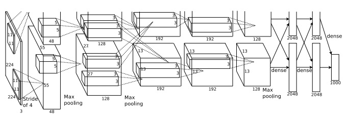
Входной слой содержит \(3\times224\times224\) нейронов, представляющих значения RGB для изображения \(224\times224\). Напомним, что, как упоминалось ранее, в ImageNet есть изображения разного разрешения. Это создаёт проблему, поскольку входной слой нейронной сети обычно имеет фиксированный размер. KSH справились с этим, масштабируя каждое изображение так, чтобы его короткая сторона имела длину 256. Затем они вырезали область \(256\times256\) в центре масштабированного изображения. Наконец, KSH извлекали случайные фрагменты \(224\times224\) (и их горизонтальные отражения) из изображений \(256\times256\). Такое случайное кадрирование было способом расширить обучающие данные и тем самым уменьшить переобучение. Это особенно полезно в такой большой сети, как у KSH. Именно эти изображения \(224\times224\) и подавались на вход сети. В большинстве случаев кадрированное изображение всё ещё содержит главный объект исходного изображения.
Переходя к скрытым слоям сети KSH: первый скрытый слой — свёрточный, с этапом max-пулинга. В нём используются локальные рецептивные поля размера \(11\times11\) и шаг сдвига 4 пикселя. Всего в нём 96 карт признаков. Карты признаков разделены на две группы по 48: первые 48 карт признаков находятся на одном GPU, вторые 48 — на другом. Max-пулинг в этом и последующих слоях выполняется по областям \(3\times3\), но области пулинга могут перекрываться и отстоят друг от друга всего на 2 пикселя.
Второй скрытый слой — тоже свёрточный, с этапом max-пулинга. В нём используются локальные рецептивные поля \(5\times5\) и всего 256 карт признаков, по 128 на каждом GPU. Заметьте, что карты признаков используют только 48 входных каналов, а не все 96 выходов предыдущего слоя (как обычно бывает). Дело в том, что каждая карта признаков использует входы только с того же GPU. В этом смысле сеть отходит от свёрточной архитектуры, описанной ранее в главе, хотя основная идея, очевидно, та же.
Третий, четвёртый и пятый скрытые слои — свёрточные, но, в отличие от предыдущих слоёв, без max-пулинга. Их параметры: (3) 384 карты признаков, локальные рецептивные поля \(3\times3\) и 256 входных каналов; (4) 384 карты признаков, локальные рецептивные поля \(3\times3\) и 192 входных канала; (5) 256 карт признаков, локальные рецептивные поля \(3\times3\) и 192 входных канала. Заметьте, что третий слой включает обмен данными между GPU (как показано на рисунке), чтобы карты признаков могли использовать все 256 входных каналов.
Шестой и седьмой скрытые слои — полносвязные, по 4096 нейронов в каждом.
Выходной слой — слой softmax из 1000 нейронов.
В сети KSH используется много приёмов. Вместо сигмоидной функции активации или tanh KSH применяют выпрямленные линейные нейроны, что значительно ускорило обучение. В сети KSH было примерно 60 миллионов обучаемых параметров, поэтому даже при большом обучающем наборе она была подвержена переобучению. Чтобы справиться с этим, они расширили обучающий набор с помощью описанной выше стратегии случайного кадрирования. Кроме того, с переобучением они боролись с помощью варианта L2-регуляризации и дропаута. Сама сеть обучалась стохастическим градиентным спуском по мини-пакетам с моментом.
Таков обзор многих ключевых идей статьи KSH. Некоторые детали я опустил — за ними обращайтесь к статье. Можно также посмотреть cuda-convnet Алекса Крижевского (и последующие проекты) — там есть код, реализующий многие из этих идей. Была разработана и реализация на Theano27; её код доступен здесь. Код узнаваемо похож на разработанный в этой главе, хотя использование нескольких GPU несколько усложняет дело. Во фреймворке нейронных сетей Caffe тоже есть версия сети KSH, подробности — в их Model Zoo.
Соревнование ILSVRC 2014 года. С 2012 года продолжается быстрый прогресс. Рассмотрим соревнование ILSVRC 2014 года. Как и в 2012 году, в нём был обучающий набор из 1.2 миллиона изображений в 1000 категорий, а критерием качества было то, входит ли правильная категория в 5 лучших предсказаний. Победившая команда, в основном из Google28, использовала глубокую свёрточную сеть с 22 слоями нейронов. Они назвали свою сеть GoogLeNet — в честь LeNet-5. GoogLeNet достигла точности top-5 93.33 процента — гигантское улучшение по сравнению с победителем 2013 года (Clarifai, 88.3 процента) и победителем 2012 года (KSH, 84.7 процента).
Насколько же хороша точность GoogLeNet в 93.33 процента? В 2014 году группа исследователей написала обзорную статью о соревновании ILSVRC29. Один из рассматриваемых в ней вопросов — насколько хорошо с ILSVRC справляются люди. Для этого авторы создали систему, позволяющую людям классифицировать изображения ILSVRC. Как объясняет один из авторов, Андрей Карпаты, в содержательном посте в блоге, довести людей до уровня GoogLeNet оказалось очень хлопотно:
…задача разметки изображений 5 из 1000 категорий быстро оказалась чрезвычайно трудной — даже для некоторых друзей из лаборатории, которые уже какое-то время работали с ILSVRC и его классами. Сначала мы думали выложить её на [Amazon Mechanical Turk]. Потом думали нанять студентов за плату. Потом я организовал «вечеринку разметки» — интенсивную разметку силами только (экспертов-разметчиков) нашей лаборатории. Потом я разработал изменённый интерфейс, который использовал предсказания GoogLeNet, чтобы сократить число категорий с 1000 примерно до 100. Всё равно было слишком сложно — люди продолжали пропускать категории, и доля ошибок доходила до 13–15%. В конце концов я понял, что для того, чтобы хоть сколько-нибудь приблизиться к GoogLeNet, эффективнее всего самому сесть и пройти мучительно долгий процесс обучения, а затем тщательной аннотации… Разметка шла со скоростью примерно 1 изображение в минуту, но со временем скорость снижалась… Некоторые изображения распознаются легко, а некоторые (например, близкие породы собак, птиц или обезьян) могут требовать нескольких минут сосредоточенных усилий. Я очень хорошо научился определять породы собак… На выборке изображений, с которой я работал, ошибка классификации GoogLeNet составила 6.8%… Моя собственная ошибка в итоге составила 5.1%, примерно на 1.7% лучше.
Иными словами, человек-эксперт, работая скрупулёзно, ценой больших усилий смог с небольшим отрывом обойти глубокую нейронную сеть. Более того, Карпаты сообщает, что второй эксперт, обученный на меньшей выборке изображений, смог достичь лишь 12.0 процента ошибок top-5 — значительно хуже результата GoogLeNet. Около половины ошибок были вызваны тем, что эксперт «не заметил и не рассмотрел правильную метку как вариант».
Это поразительные результаты. Более того, после этой работы несколько команд сообщили о системах, доля ошибок top-5 у которых действительно лучше 5.1%. В СМИ это иногда подавали так, будто у этих систем зрение лучше человеческого. Хотя результаты действительно впечатляют, есть много оговорок, из-за которых думать, что у этих систем зрение лучше человеческого, — заблуждение. Соревнование ILSVRC во многих отношениях — довольно ограниченная задача: изображения, собранные в открытом интернете, не обязательно представительны для изображений, встречающихся в приложениях! И, конечно, критерий top-5 весьма искусственен. Нам ещё далеко до решения задачи распознавания изображений или, шире, компьютерного зрения. И всё же чрезвычайно ободряет, что всего за несколько лет в столь трудной задаче достигнут такой прогресс.
Другие работы. Я сосредоточился на ImageNet, но существует немало других работ, где нейронные сети применяются для распознавания изображений. Позвольте кратко описать несколько интересных недавних результатов — просто чтобы дать почувствовать характер современных исследований.
Один ободряющий набор практических результатов получила команда из Google, применившая глубокие свёрточные сети к задаче распознавания номеров домов на снимках Google Street View30. В своей статье они сообщают об обнаружении и автоматической расшифровке почти 100 миллионов номеров домов с точностью, сопоставимой с точностью человека-оператора. Система быстрая: она расшифровала все снимки номеров домов Street View во Франции меньше чем за час! Они пишут: «Этот новый набор данных значительно повысил качество геокодирования Google Maps в нескольких странах, особенно в тех, где ещё не было других источников хорошего геокодирования». И далее делают более широкое заявление: «Мы считаем, что этой моделью мы решили задачу [оптического распознавания символов] для коротких последовательностей [символов] во многих приложениях».
Возможно, у вас сложилось впечатление, что всё это — парад ободряющих результатов. Конечно, в некоторых самых интересных работах сообщается о фундаментальных вещах, которых мы пока не понимаем. Например, в статье 2013 года31 было показано, что у глубоких сетей могут быть, по сути, слепые пятна. Посмотрите на строки изображений ниже. Слева — изображение ImageNet, правильно классифицированное их сетью. Справа — слегка искажённое изображение (искажение показано посередине), которое сеть классифицирует неправильно. Авторы обнаружили, что такие «состязательные» (adversarial) изображения существуют для каждого образца, а не только для нескольких особых.
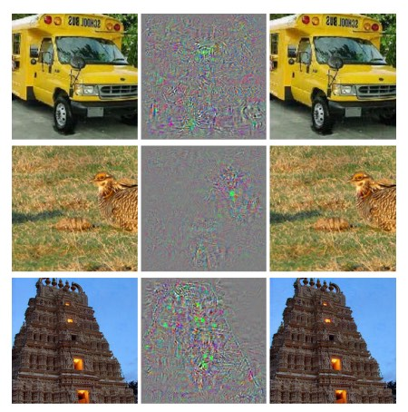
Это тревожный результат. В статье использовалась сеть на основе того же кода, что и сеть KSH, — то есть как раз такого типа сеть, которая применяется всё шире. Хотя такие нейронные сети вычисляют функции, в принципе непрерывные, подобные результаты говорят о том, что на практике они, скорее всего, вычисляют функции, очень близкие к разрывным. Хуже того, разрывы эти таковы, что противоречат нашим интуитивным представлениям о разумном поведении. Это настораживает. Кроме того, пока не очень понятно, чем вызвана эта разрывность: дело в функции потерь? В используемых функциях активации? В архитектуре сети? В чём-то ещё? Мы пока не знаем.
Впрочем, эти результаты не так плохи, как кажется. Хотя такие состязательные изображения распространены, на практике они маловероятны. Как отмечается в статье:
Существование состязательных негативных примеров, по-видимому, противоречит способности сети достигать высокой обобщающей способности. Действительно, если сеть хорошо обобщает, как её могут сбить с толку эти состязательные негативные примеры, неотличимые от обычных? Объяснение в том, что множество состязательных негативных примеров имеет чрезвычайно низкую вероятность и поэтому никогда (или редко) не встречается в тестовом наборе, однако оно плотно (во многом как рациональные числа) и потому находится рядом практически с каждым тестовым примером.
Тем не менее огорчает, что мы понимаем нейронные сети настолько плохо, что подобный результат оказался недавним открытием. Конечно, большое достоинство этих результатов в том, что они стимулировали множество последующих работ. Например, в одной недавней статье32 показано, что для обученной сети можно сгенерировать изображения, которые человеку кажутся белым шумом, но которые сеть с очень высокой уверенностью относит к известной категории. Это ещё одно свидетельство того, что нам предстоит долгий путь к пониманию нейронных сетей и их применения в распознавании изображений.
Несмотря на подобные результаты, общая картина обнадёживает. Мы видим быстрый прогресс на чрезвычайно трудных эталонных задачах вроде ImageNet. Видим и быстрый прогресс в решении реальных задач, таких как распознавание номеров домов в Street View. Но, как бы это ни ободряло, недостаточно видеть улучшения на эталонных задачах или даже в реальных приложениях. Есть фундаментальные явления, которые мы всё ещё плохо понимаем, — например, существование состязательных изображений. Пока такие фундаментальные проблемы всё ещё обнаруживаются (не говоря уже о том, чтобы решаться), преждевременно говорить, что мы близки к решению задачи распознавания изображений. В то же время такие проблемы — захватывающий стимул для дальнейшей работы.
6.5 Другие подходы к глубоким нейронным сетям
На протяжении книги мы сосредоточились на одной задаче: классификации цифр MNIST. Это сочная задача, которая заставила нас разобраться во многих мощных идеях: стохастическом градиентном спуске, обратном распространении ошибки, свёрточных сетях, регуляризации и других. Но это и узкая задача. Читая литературу по нейронным сетям, вы столкнётесь со множеством идей, которые мы не обсуждали: рекуррентные нейронные сети, машины Больцмана, генеративные модели, перенос обучения (transfer learning), обучение с подкреплением и так далее, и так далее… и так далее! Нейронные сети — обширная область. Однако многие важные идеи — вариации тех, что мы уже обсудили, и их можно понять, приложив немного усилий. В этом разделе я приоткрою эти пока не виденные горизонты. Обсуждение не будет ни подробным, ни исчерпывающим — это сильно увеличило бы книгу. Скорее, оно импрессионистское — попытка передать концептуальное богатство области и связать часть этих богатств с тем, что мы уже видели. По ходу раздела я дам несколько ссылок на другие источники — как отправные точки для дальнейшего изучения. Конечно, многие из этих ссылок скоро устареют, и, возможно, вы захотите поискать более свежую литературу. Несмотря на это, я ожидаю, что многие лежащие в основе идеи сохранят интерес надолго.
Рекуррентные нейронные сети (RNN). В сетях прямого распространения, которые мы использовали, есть единственный вход, который полностью определяет активации всех нейронов в последующих слоях. Это очень статичная картина: всё в сети неподвижно, в ней есть что-то застывшее, кристаллическое. Но предположим, что мы позволим элементам сети динамически меняться. Например, поведение скрытых нейронов может определяться не только активациями в предыдущих скрытых слоях, но и активациями в более ранние моменты времени. Более того, активация нейрона может частично определяться его собственной активацией в более ранний момент. В сети прямого распространения такого, конечно, не происходит. Или, возможно, активации скрытых и выходных нейронов будут определяться не только текущим входом сети, но и более ранними входами.
Нейронные сети с таким изменяющимся во времени поведением называются рекуррентными нейронными сетями, или RNN. Есть много разных способов математически формализовать неформальное описание рекуррентных сетей из предыдущего абзаца. Почувствовать некоторые из этих математических моделей можно, просмотрев статью Википедии о RNN. На момент написания на этой странице перечислено не меньше 13 разных моделей. Но если отвлечься от математических деталей, общая идея в том, что RNN — это нейронные сети, в которых есть некое понятие динамического изменения во времени. И неудивительно, что они особенно полезны для анализа данных или процессов, меняющихся во времени. Такие данные и процессы естественно возникают, например, в задачах, связанных с речью или естественным языком.
Один из нынешних способов использования RNN — более тесно связать нейронные сети с традиционными способами мышления об алгоритмах, основанными на таких понятиях, как машины Тьюринга и (обычные) языки программирования. В статье 2014 года была разработана RNN, которая принимала на вход посимвольное описание (очень-очень простой!) программы на Python и по этому описанию предсказывала её вывод. Неформально говоря, сеть учится «понимать» некоторые программы на Python. Во второй статье, тоже 2014 года, RNN использовались как отправная точка для разработки того, что авторы назвали нейронной машиной Тьюринга (NTM). Это универсальный компьютер, вся структура которого может обучаться градиентным спуском. Они обучили свою NTM выводить алгоритмы для нескольких простых задач, таких как сортировка и копирование.
Пока что это крайне простые игрушечные модели. Умение выполнить
программу на Python print(398345+42598) не делает сеть
полноценным интерпретатором Python! Неясно, насколько дальше удастся
продвинуть эти идеи. Тем не менее результаты интригуют. Исторически
нейронные сети хорошо справлялись с задачами распознавания образов, где
у обычных алгоритмических подходов возникают трудности. И наоборот,
обычные алгоритмические подходы хороши в решении задач, с которыми
нейронные сети справляются не так хорошо. Никто сегодня не реализует
веб-сервер или программу базы данных с помощью нейронной сети! Было бы
замечательно разработать единые модели, объединяющие сильные стороны и
нейронных сетей, и более традиционных подходов к алгоритмам. RNN и идеи,
вдохновлённые RNN, могут помочь нам в этом.
В последние годы RNN применялись и ко многим другим задачам. Особенно полезными они оказались в распознавании речи. Подходы на основе RNN, например, установили рекорды точности распознавания фонем. Их также использовали для разработки улучшенных моделей языка, которым люди пользуются в устной речи. Более качественные языковые модели помогают устранять неоднозначность высказываний, которые иначе звучат одинаково. Хорошая языковая модель, например, подскажет, что «to infinity and beyond» («в бесконечность и дальше») гораздо вероятнее, чем «two infinity and beyond», несмотря на то что звучат эти фразы одинаково. С помощью RNN были установлены новые рекорды на некоторых эталонных языковых задачах.
Эта работа, между прочим, — часть более широкого применения в распознавании речи глубоких нейронных сетей всех типов, а не только RNN. Например, подход на основе глубоких сетей достиг выдающихся результатов в распознавании слитной речи с большим словарём. А другая система на основе глубоких сетей была внедрена в операционную систему Android от Google (связанные технические работы см. в статьях Винсента Ванхуке 2012–2015 годов).
Я немного рассказал о том, что умеют RNN, но не так много — о том, как они работают. Вас, возможно, не удивит, что многие идеи, используемые в сетях прямого распространения, применимы и в RNN. В частности, RNN можно обучать с помощью несложных модификаций градиентного спуска и обратного распространения ошибки. Многие другие идеи из сетей прямого распространения — от приёмов регуляризации до свёрток и используемых функций активации и стоимости — тоже полезны в рекуррентных сетях. Так что многие приёмы, разработанные в книге, можно адаптировать для RNN.
Ячейки долгой краткосрочной памяти (LSTM). Одна из трудностей с RNN в том, что ранние модели оказались очень трудными для обучения — даже труднее, чем глубокие сети прямого распространения. Причина — проблема нестабильного градиента, которую мы обсуждали в главе 5. Напомним, что обычно эта проблема проявляется в том, что градиент становится всё меньше и меньше по мере распространения назад через слои. Из-за этого обучение в первых слоях идёт крайне медленно. В RNN проблема на самом деле ещё серьёзнее, поскольку градиенты распространяются назад не только через слои, но и во времени. Если сеть работает долго, градиент может стать крайне нестабильным, и учиться по нему будет трудно. К счастью, в RNN можно встроить идею, известную как ячейки долгой краткосрочной памяти (long short-term memory, LSTM). Эти ячейки были предложены Хохрайтером и Шмидхубером в 1997 году с явной целью помочь в решении проблемы нестабильного градиента. LSTM сильно облегчают получение хороших результатов при обучении RNN, и во многих недавних статьях (включая многие из тех, на которые я ссылался выше) используются LSTM или родственные идеи.
Глубокие сети доверия, генеративные модели и машины Больцмана. Современный интерес к глубокому обучению начался в 2006 году со статей, объяснявших, как обучать тип нейронных сетей, известный как глубокая сеть доверия (deep belief network, DBN)33. Несколько лет DBN были влиятельны, но с тех пор их популярность снизилась, а в моду вошли такие модели, как сети прямого распространения и рекуррентные нейронные сети. Несмотря на это, у DBN есть ряд свойств, делающих их интересными.
Одна из причин, по которым DBN интересны, — они представляют собой пример так называемой генеративной модели. В сети прямого распространения мы задаём входные активации, и они определяют активации нейронов-признаков дальше в сети. Генеративную модель вроде DBN можно использовать похожим образом, но можно также задать значения некоторых нейронов-признаков, а затем «запустить сеть в обратную сторону», порождая значения входных активаций. Конкретнее, DBN, обученная на изображениях рукописных цифр, может (потенциально и при некоторой аккуратности) также использоваться для генерации изображений, похожих на рукописные цифры. Иными словами, DBN в некотором смысле училась бы писать. В этом генеративная модель очень похожа на человеческий мозг: она может не только читать цифры, но и писать их. По запоминающемуся выражению Джеффри Хинтона, чтобы распознавать формы, сначала научитесь порождать изображения.
Вторая причина, по которой DBN интересны, — они способны к обучению без учителя и частичному обучению с учителем. Например, обучаясь на изображениях, DBN могут выучить признаки, полезные для понимания других изображений, даже если обучающие изображения не размечены. А способность к обучению без учителя чрезвычайно интересна как по фундаментальным научным причинам, так и — если удастся заставить её работать достаточно хорошо — для практических приложений.
Почему же при таких привлекательных свойствах популярность DBN как моделей глубокого обучения снизилась? Отчасти потому, что такие модели, как сети прямого распространения и рекуррентные сети, достигли множества впечатляющих результатов, вроде прорывов на эталонных задачах распознавания изображений и речи. Неудивительно и совершенно справедливо, что сейчас этим моделям уделяется много внимания. Однако у этого есть досадное следствие. Рынок идей часто работает по принципу «победитель получает всё»: почти всё внимание достаётся тому, что в данный момент модно в той или иной области. Людям может стать крайне трудно работать над временно немодными идеями, даже когда эти идеи явно представляют настоящий долгосрочный интерес. Моё личное мнение: DBN и другие генеративные модели, вероятно, заслуживают большего внимания, чем получают сейчас. И я не удивлюсь, если DBN или родственная модель однажды превзойдут модели, модные сегодня. Введение в DBN можно найти в этом обзоре. Мне также помогла эта статья. Она посвящена не столько собственно глубоким сетям доверия, сколько ограниченным машинам Больцмана, которые являются ключевым компонентом DBN, но содержит много полезной информации.
Другие идеи. Что ещё происходит в нейронных сетях и глубоком обучении? Что ж, существует огромное количество других увлекательных работ. Среди активных направлений исследований — применение нейронных сетей для обработки естественного языка (см. также этот содержательный обзор), машинного перевода, а также, возможно, более неожиданные применения, например в музыкальной информатике. Есть, конечно, и много других областей. Во многих случаях, прочитав эту книгу, вы сможете начать следить за недавними работами, хотя (конечно) придётся восполнять пробелы в предполагаемых фоновых знаниях.
Закончу этот раздел упоминанием одной особенно забавной статьи. В ней глубокие свёрточные сети сочетаются с приёмом, известным как обучение с подкреплением, чтобы научиться хорошо играть в видеоигры (см. также это продолжение). Идея в том, чтобы с помощью свёрточной сети упростить пиксельные данные с экрана игры, превратив их в более простой набор признаков, по которому можно решать, какое действие предпринять: «влево», «вниз», «огонь» и так далее. Особенно интересно, что одна и та же сеть научилась весьма неплохо играть в семь разных классических видеоигр, превзойдя людей-экспертов в трёх из них. Конечно, всё это звучит как трюк, и статья, несомненно, была хорошо разрекламирована — с названием «Playing Atari with reinforcement learning». Но если заглянуть за внешний блеск, учтите, что эта система берёт сырые пиксельные данные — она даже не знает правил игры! — и по этим данным учится принимать качественные решения в нескольких очень разных и очень враждебных средах, каждая со своим сложным набором правил. Это довольно здорово.
6.6 О будущем нейронных сетей
Интерфейсы, управляемые намерением. Есть старая шутка, в которой нетерпеливый профессор говорит растерянному студенту: «Не слушайте, что я говорю; слушайте, что я имею в виду». Исторически компьютеры, подобно растерянному студенту, часто не понимали, что имеют в виду их пользователи. Но это меняется. Я до сих пор помню своё удивление, когда впервые сделал опечатку в поисковом запросе Google, а Google ответил: «Возможно, вы имели в виду [исправленный запрос]?» — и предложил соответствующие результаты поиска. Генеральный директор Google Ларри Пейдж однажды описал идеальную поисковую систему как такую, которая точно понимает, что означают [ваши запросы], и выдаёт вам ровно то, что вы хотите.
Это видение интерфейса, управляемого намерением. В этом видении поиск, вместо того чтобы отвечать на буквальные запросы пользователей, будет с помощью машинного обучения принимать расплывчатый пользовательский ввод, точно распознавать, что имелось в виду, и действовать на основе этого понимания.
Идею интерфейсов, управляемых намерением, можно применять гораздо шире, чем в поиске. В ближайшие несколько десятилетий тысячи компаний будут создавать продукты, использующие машинное обучение для построения пользовательских интерфейсов, терпимых к неточности и при этом распознающих истинное намерение пользователя и действующих в соответствии с ним. Мы уже видим ранние примеры таких интерфейсов: Siri от Apple; Wolfram Alpha; Watson от IBM; системы, умеющие подписывать фотографии и видео; и многое другое.
Большинство этих продуктов потерпят неудачу. Вдохновенное проектирование интерфейсов — трудное дело, и я ожидаю, что многие компании возьмут мощную технологию машинного обучения и построят с её помощью пресные интерфейсы. Лучшее в мире машинное обучение не поможет, если сама концепция вашего интерфейса никуда не годится. Но останется часть продуктов, которые добьются успеха. Со временем это глубоко изменит наши отношения с компьютерами. Не так давно — скажем, в 2005 году — пользователи считали само собой разумеющимся, что в большинстве взаимодействий с компьютером нужна точность. Более того, компьютерная грамотность во многом означала усвоение мысли, что компьютеры понимают всё крайне буквально: одна не там поставленная точка с запятой может полностью изменить характер взаимодействия с компьютером. Но в ближайшие несколько десятилетий, я ожидаю, мы создадим много успешных интерфейсов, управляемых намерением, и это кардинально изменит то, чего мы ждём от взаимодействия с компьютерами.
Машинное обучение, наука о данных и благотворный круг инноваций. Конечно, машинное обучение используется не только для создания интерфейсов, управляемых намерением. Другое заметное применение — наука о данных (data science), где машинное обучение используется для поиска скрытых в данных «известных неизвестных». Это уже модная область, о ней много написано, так что я не буду говорить много. Но хочу упомянуть одно следствие этой моды, о котором говорят не так часто: в долгосрочной перспективе, возможно, крупнейшим прорывом в машинном обучении окажется не какой-то отдельный концептуальный прорыв. Скорее, крупнейшим прорывом будет то, что исследования в машинном обучении станут прибыльными — благодаря приложениям в науке о данных и других областях. Если компания может вложить 1 доллар в исследования по машинному обучению и достаточно быстро получить обратно 1 доллар 10 центов, то в исследования по машинному обучению в итоге пойдёт много денег. Иначе говоря, машинное обучение — двигатель, порождающий несколько крупных новых рынков и областей роста в технологиях. В результате появятся большие команды людей с глубокими знаниями предметной области и доступом к исключительным ресурсам. Это продвинет машинное обучение ещё дальше, создавая новые рынки и возможности, — благотворный круг инноваций.
Роль нейронных сетей и глубокого обучения. Я говорил в общих чертах о машинном обучении как источнике новых технологических возможностей. Какова же будет конкретная роль нейронных сетей и глубокого обучения во всём этом?
Чтобы ответить на этот вопрос, полезно обратиться к истории. Ещё в 1980-х нейронные сети вызывали огромный энтузиазм и оптимизм, особенно после того, как обратное распространение ошибки стало широко известно. Этот энтузиазм угас, и в 1990-х эстафету машинного обучения приняли другие методы, например метод опорных векторов. Сегодня нейронные сети снова на волне успеха, устанавливают всевозможные рекорды и побеждают всех соперников во многих задачах. Но кто сказал, что завтра не будет разработан какой-то новый подход, который снова сметёт нейронные сети? Или, может быть, прогресс нейронных сетей застопорится, и ничто не придёт сразу им на смену?
Поэтому гораздо легче рассуждать в общем о будущем машинного обучения, чем конкретно о нейронных сетях. Отчасти проблема в том, что мы так плохо понимаем нейронные сети. Почему нейронные сети так хорошо обобщают? Как им удаётся настолько хорошо избегать переобучения при очень большом числе обучаемых параметров? Почему стохастический градиентный спуск работает так хорошо? Насколько хорошо будут работать нейронные сети при увеличении наборов данных? Например, если бы ImageNet увеличили в 10 раз, улучшились бы результаты нейронных сетей больше или меньше, чем у других методов машинного обучения? Всё это простые, фундаментальные вопросы. И в настоящее время мы очень плохо понимаем ответы на них. Пока это так, трудно сказать, какую роль нейронные сети сыграют в будущем машинного обучения.
Сделаю одно предсказание: я считаю, что глубокое обучение пришло надолго. Способность обучаться иерархиям понятий, выстраивая многочисленные уровни абстракции, по-видимому, фундаментальна для осмысления мира. Это не значит, что глубокие обучающиеся системы завтрашнего дня не будут радикально отличаться от сегодняшних. Мы можем увидеть серьёзные изменения в составляющих их элементах, в архитектурах или в алгоритмах обучения. Эти изменения могут оказаться настолько разительными, что мы перестанем считать получившиеся системы нейронными сетями. Но они всё равно будут заниматься глубоким обучением.
Приведут ли нейронные сети и глубокое обучение в скором времени к искусственному интеллекту? В этой книге мы сосредоточились на использовании нейронных сетей для конкретных задач, таких как классификация изображений. Расширим наши амбиции и спросим: а как насчёт думающих компьютеров общего назначения? Могут ли нейронные сети и глубокое обучение помочь решить задачу (общего) искусственного интеллекта (ИИ)? И если да, то можно ли, учитывая быстрый недавний прогресс глубокого обучения, ожидать появления общего ИИ в ближайшее время?
Всесторонний ответ на эти вопросы потребовал бы отдельной книги. Вместо этого позвольте сделать одно наблюдение. Оно основано на идее, известной как закон Конвея:
Любая организация, проектирующая систему… неизбежно создаст проект, структура которого копирует структуру коммуникаций этой организации.
Так, например, закон Конвея подсказывает, что конструкция самолёта Boeing 747 будет отражать расширенную организационную структуру Boeing и его подрядчиков на момент проектирования 747. Или простой конкретный пример: представьте компанию, создающую сложное программное приложение. Если панель управления приложения должна быть интегрирована с каким-то алгоритмом машинного обучения, человеку, создающему панель, лучше бы общаться с экспертом компании по машинному обучению. Закон Конвея — это просто то же наблюдение, только в крупном масштабе.
Впервые услышав о законе Конвея, многие отвечают либо «Ну разве это не банально и очевидно?», либо «Разве это не неверно?». Начну с возражения, что закон неверен. В качестве примера такого возражения рассмотрим вопрос: где в конструкции 747 проявляется бухгалтерия Boeing? А служба уборки? А внутренний общепит? Ответ в том, что эти части организации, вероятно, нигде явно в 747 не проявляются. Так что закон Конвея следует понимать как относящийся только к тем частям организации, которые явно занимаются проектированием и инженерной работой.
А как насчёт другого возражения — что закон Конвея банален и очевиден? Возможно, это и так, но я так не думаю, ведь организации слишком часто действуют, не считаясь с законом Конвея. Команды, создающие новые продукты, часто раздуты унаследованными сотрудниками или, наоборот, в них нет человека с какой-то ключевой экспертизой. Вспомните все продукты с бесполезными усложняющими функциями. Или все продукты с очевидными крупными недостатками — например, ужасным пользовательским интерфейсом. Проблемы обоих классов часто вызваны несоответствием между командой, которая нужна была для создания хорошего продукта, и командой, которую на самом деле собрали. Закон Конвея может быть очевиден, но это не значит, что люди не игнорируют его постоянно.
Закон Конвея применим к проектированию и разработке систем, когда мы с самого начала довольно хорошо понимаем вероятные составные части и то, как их создать. Его нельзя напрямую применить к разработке искусственного интеллекта, потому что ИИ (пока) не такая задача: мы не знаем, каковы составные части. Более того, мы даже не уверены, какие базовые вопросы следует задавать. Иными словами, на данном этапе ИИ — скорее научная задача, чем инженерная. Представьте, что вы начинаете проектировать 747, ничего не зная о реактивных двигателях или принципах аэродинамики. Вы не знали бы, каких экспертов нанимать в свою организацию. Как выразился Вернер фон Браун, «фундаментальные исследования — это то, чем я занимаюсь, когда не знаю, что делаю». Есть ли версия закона Конвея, применимая к задачам, которые скорее научные, чем инженерные?
Чтобы разобраться в этом вопросе, обратимся к истории медицины. На заре медицина была делом таких врачей, как Гален и Гиппократ, изучавших всё тело. Но по мере роста наших знаний людям пришлось специализироваться. Мы открыли множество глубоких новых идей34: вспомните, например, микробную теорию болезней, или понимание того, как работают антитела, или понимание того, что сердце, лёгкие, вены и артерии образуют единую сердечно-сосудистую систему. Такие глубокие прозрения легли в основу таких подобластей, как эпидемиология, иммунология и группа взаимосвязанных областей вокруг сердечно-сосудистой системы. Так структура наших знаний сформировала социальную структуру медицины. Особенно поразительно это в случае иммунологии: осознать, что иммунная система существует и что это система, достойная изучения, — крайне нетривиальное прозрение. Так что у нас есть целая область медицины — со специалистами, конференциями, даже премиями и так далее, — организованная вокруг того, что не просто невидимо, но, пожалуй, вообще не является отдельной вещью.
Это распространённая закономерность, повторявшаяся во многих устоявшихся науках: не только в медицине, но и в физике, математике, химии и других. Области начинаются монолитными, всего с несколькими глубокими идеями. Ранние эксперты могут овладеть всеми этими идеями. Но со временем монолитный характер меняется. Мы открываем множество новых глубоких идей — слишком много, чтобы один человек мог по-настоящему ими овладеть. В результате социальная структура области реорганизуется и делится вокруг этих идей. Вместо монолита у нас появляются области внутри областей внутри областей — сложная, рекурсивная, самоотносимая социальная структура, организация которой отражает связи между нашими глубочайшими прозрениями. Так структура наших знаний формирует социальную организацию науки. Но эта социальная форма, в свою очередь, ограничивает и помогает определить, что мы можем открыть. Это научный аналог закона Конвея.
Так при чём здесь глубокое обучение или ИИ?
Дело в том, что с самых первых дней ИИ о нём ведутся споры, в которых одна сторона говорит: «Эй, это будет не так уж трудно, ведь у нас есть [супероружие]», а другая возражает: «[Супероружия] будет недостаточно». Глубокое обучение — последнее супероружие, которое, как я слышал, фигурирует в таких спорах35; в более ранних версиях спора фигурировали логика, или Пролог, или экспертные системы, или любой другой самый мощный метод своего времени. Проблема таких споров в том, что они не дают никакого хорошего способа сказать, насколько мощно то или иное претендующее на эту роль супероружие. Конечно, мы только что потратили целую главу на обзор свидетельств того, что глубокое обучение способно решать чрезвычайно трудные задачи. Это определённо выглядит очень захватывающе и многообещающе. Но то же самое было верно в своё время и для таких систем, как Пролог, Eurisko или экспертные системы. Так что сам по себе факт, что набор идей выглядит очень многообещающе, мало что значит. Как понять, действительно ли глубокое обучение отличается от этих более ранних идей? Есть ли способ измерить, насколько мощен и перспективен набор идей? Закон Конвея подсказывает, что в качестве грубой эвристической косвенной метрики можно оценивать сложность социальной структуры, связанной с этими идеями.
Итак, нужно задать два вопроса. Во-первых, насколько мощный набор идей связан с глубоким обучением согласно этой метрике социальной сложности? Во-вторых, насколько мощная теория нам понадобится, чтобы суметь построить общий искусственный интеллект?
Что касается первого вопроса: глубокое обучение сегодня — захватывающая и быстро развивающаяся, но вместе с тем относительно монолитная область. В ней есть несколько глубоких идей и несколько основных конференций, причём между некоторыми из них есть существенное пересечение. И статья за статьёй опирается на один и тот же базовый набор идей: использование стохастического градиентного спуска (или близкого его варианта) для оптимизации функции стоимости. Замечательно, что эти идеи так успешны. Но чего мы пока не видим — так это множества хорошо развитых подобластей, каждая из которых исследовала бы свой набор глубоких идей, продвигая глубокое обучение во многих направлениях. Поэтому по метрике социальной сложности глубокое обучение, простите за каламбур, — всё ещё довольно неглубокая область. Один человек всё ещё может овладеть большинством самых глубоких идей этой области.
По второму вопросу: насколько сложный и мощный набор идей понадобится, чтобы получить ИИ? Конечно, ответ на этот вопрос таков: никто не знает наверняка. Но в приложении я рассматриваю некоторые из имеющихся свидетельств по этому вопросу. Я прихожу к выводу, что даже при довольно оптимистичном взгляде для создания ИИ потребуется очень-очень много глубоких идей. И закон Конвея подсказывает, что для того, чтобы дойти до этого момента, мы неизбежно увидим появление множества взаимосвязанных дисциплин со сложной и удивительной структурой, отражающей структуру наших глубочайших прозрений. Мы пока не видим такой богатой социальной структуры в использовании нейронных сетей и глубокого обучения. Поэтому я считаю, что нас отделяют (как минимум) несколько десятилетий от использования глубокого обучения для создания общего ИИ.
Я приложил немало усилий, чтобы построить аргумент, который носит предварительный характер, возможно, кажется довольно очевидным и приводит к неопределённому выводу. Это, несомненно, разочарует тех, кто жаждет определённости. Читая всякое в интернете, я вижу множество людей, громко отстаивающих очень определённые и очень твёрдые мнения об ИИ, часто на основе шатких рассуждений и несуществующих свидетельств. Моё откровенное мнение таково: говорить пока рано. Как гласит старая шутка, если спросить учёного, как далеко до некоторого открытия, и он ответит «10 лет» (или больше), то он имеет в виду «понятия не имею». До ИИ, как и до управляемого термоядерного синтеза и ещё нескольких технологий, остаётся 10 лет вот уже более 60 лет. С другой стороны, в глубоком обучении у нас определённо есть мощный метод, пределы которого ещё не найдены, и множество широко открытых фундаментальных проблем. Это захватывающая творческая возможность.